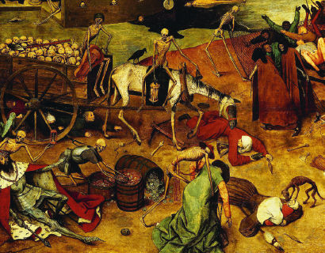
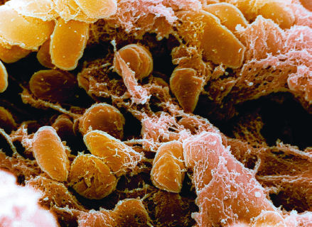
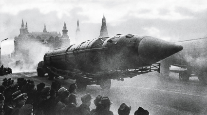
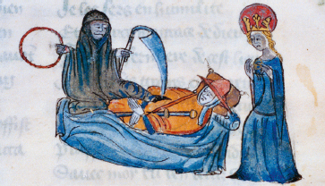
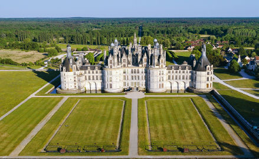
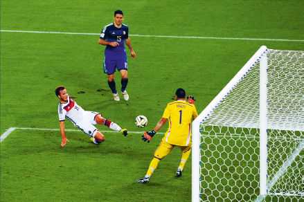

At the dawn of the third millennium, humanity wakes up, stretching its limbs and rubbing its eyes. Remnants of some awful nightmare are still drifting across its mind. ‘There was something with barbed wire, and huge mushroom clouds. Oh well, it was just a bad dream.’ Going to the bathroom, humanity washes its face, examines its wrinkles in the mirror, makes a cup of coffee and opens the diary. ‘Let’s see what’s on the agenda today.’
For thousands of years the answer to this question remained unchanged. The same three problems preoccupied the people of twentieth-century China, of medieval India and of ancient Egypt. Famine, plague and war were always at the top of the list. For generation after generation humans have prayed to every god, angel and saint, and have invented countless tools, institutions and social systems – but they continued to die in their millions from starvation, epidemics and violence. Many thinkers and prophets concluded that famine, plague and war must be an integral part of God’s cosmic plan or of our imperfect nature, and nothing short of the end of time would free us from them.
Yet at the dawn of the third millennium, humanity wakes up to an amazing realisation. Most people rarely think about it, but in the last few decades we have managed to rein in famine, plague and war. Of course, these problems have not been completely solved, but they have been transformed from incomprehensible and uncontrollable forces of nature into manageable challenges. We don’t need to pray to any god or saint to rescue us from them. We know quite well what needs to be done in order to prevent famine, plague and war – and we usually succeed in doing it.
True, there are still notable failures; but when faced with such failures we no longer shrug our shoulders and say, ‘Well, that’s the way things work in our imperfect world’ or ‘God’s will be done’. Rather, when famine, plague or war break out of our control, we feel that somebody must have screwed up, we set up a commission of inquiry, and promise ourselves that next time we’ll do better. And it actually works. Such calamities indeed happen less and less often. For the first time in history, more people die today from eating too much than from eating too little; more people die from old age than from infectious diseases; and more people commit suicide than are killed by soldiers, terrorists and criminals combined. In the early twenty-first century, the average human is far more likely to die from bingeing at McDonald’s than from drought, Ebola or an al-Qaeda attack.
Hence even though presidents, CEOs and generals still have their daily schedules full of economic crises and military conflicts, on the cosmic scale of history humankind can lift its eyes up and start looking towards new horizons. If we are indeed bringing famine, plague and war under control, what will replace them at the top of the human agenda? Like firefighters in a world without fire, so humankind in the twenty-first century needs to ask itself an unprecedented question: what are we going to do with ourselves? In a healthy, prosperous and harmonious world, what will demand our attention and ingenuity? This question becomes doubly urgent given the immense new powers that biotechnology and information technology are providing us with. What will we do with all that power?
Before answering this question, we need to say a few more words about famine, plague and war. The claim that we are bringing them under control may strike many as outrageous, extremely naïve, or perhaps callous. What about the billions of people scraping a living on less than $2 a day? What about the ongoing AIDS crisis in Africa, or the wars raging in Syria and Iraq? To address these concerns, let us take a closer look at the world of the early twenty-first century, before exploring the human agenda for the coming decades.
The Biological Poverty Line
Let’s start with famine, which for thousands of years has been humanity’s worst enemy. Until recently most humans lived on the very edge of the biological poverty line, below which people succumb to malnutrition and hunger. A small mistake or a bit of bad luck could easily be a death sentence for an entire family or village. If heavy rains destroyed your wheat crop, or robbers carried off your goat herd, you and your loved ones may well have starved to death. Misfortune or stupidity on the collective level resulted in mass famines. When severe drought hit ancient Egypt or medieval India, it was not uncommon that 5 or 10 per cent of the population perished. Provisions became scarce; transport was too slow and expensive to import sufficient food; and governments were far too weak to save the day.
Open any history book and you are likely to come across horrific accounts of famished populations, driven mad by hunger. In April 1694 a French official in the town of Beauvais described the impact of famine and of soaring food prices, saying that his entire district was now filled with ‘an infinite number of poor souls, weak from hunger and wretchedness and dying from want, because, having no work or occupation, they lack the money to buy bread. Seeking to prolong their lives a little and somewhat to appease their hunger, these poor folk eat such unclean things as cats and the flesh of horses flayed and cast onto dung heaps. [Others consume] the blood that flows when cows and oxen are slaughtered, and the offal that cooks throw into the streets. Other poor wretches eat nettles and weeds, or roots and herbs which they boil in water.’1
Similar scenes took place all over France. Bad weather had ruined the harvests throughout the kingdom in the previous two years, so that by the spring of 1694 the granaries were completely empty. The rich charged exorbitant prices for whatever food they managed to hoard, and the poor died in droves. About 2.8 million French – 15 per cent of the population – starved to death between 1692 and 1694, while the Sun King, Louis XIV, was dallying with his mistresses in Versailles. The following year, 1695, famine struck Estonia, killing a fifth of the population. In 1696 it was the turn of Finland, where a quarter to a third of people died. Scotland suffered from severe famine between 1695 and 1698, some districts losing up to 20 per cent of their inhabitants.2
Most readers probably know how it feels when you miss lunch, when you fast on some religious holiday, or when you live for a few days on vegetable shakes as part of a new wonder diet. But how does it feel when you haven’t eaten for days on end and you have no clue where to get the next morsel of food? Most people today have never experienced this excruciating torment. Our ancestors, alas, knew it only too well. When they cried to God, ‘Deliver us from famine!’, this is what they had in mind.
During the last hundred years, technological, economic and political developments have created an increasingly robust safety net separating humankind from the biological poverty line. Mass famines still strike some areas from time to time, but they are exceptional, and they are almost always caused by human politics rather than by natural catastrophes. In most parts of the planet, even if a person has lost his job and all of his possessions, he is unlikely to die from hunger. Private insurance schemes, government agencies and international NGOs may not rescue him from poverty, but they will provide him with enough daily calories to survive. On the collective level, the global trade network turns droughts and floods into business opportunities, and makes it possible to overcome food shortages quickly and cheaply. Even when wars, earthquakes or tsunamis devastate entire countries, international efforts usually succeed in preventing famine. Though hundreds of millions still go hungry almost every day, in most countries very few people actually starve to death.
Poverty certainly causes many other health problems, and malnutrition shortens life expectancy even in the richest countries on earth. In France, for example, 6 million people (about 10 per cent of the population) suffer from nutritional insecurity. They wake up in the morning not knowing whether they will have anything to eat for lunch; they often go to sleep hungry; and the nutrition they do obtain is unbalanced and unhealthy – lots of starch, sugar and salt, and not enough protein and vitamins.3 Yet nutritional insecurity isn’t famine, and France of the early twenty-first century isn’t France of 1694. Even in the worst slums around Beauvais or Paris, people don’t die because they have not eaten for weeks on end.
The same transformation has occurred in numerous other countries, most notably China. For millennia, famine stalked every Chinese regime from the Yellow Emperor to the Red communists. A few decades ago China was a byword for food shortages. Tens of millions of Chinese starved to death during the disastrous Great Leap Forward, and experts routinely predicted that the problem would only get worse. In 1974 the first World Food Conference was convened in Rome, and delegates were treated to apocalyptic scenarios. They were told that there was no way for China to feed its billion people, and that the world’s most populous country was heading towards catastrophe. In fact, it was heading towards the greatest economic miracle in history. Since 1974 hundreds of millions of Chinese have been lifted out of poverty, and though hundreds of millions more still suffer greatly from privation and malnutrition, for the first time in its recorded history China is now free from famine.
Indeed, in most countries today overeating has become a far worse problem than famine. In the eighteenth century Marie Antoinette allegedly advised the starving masses that if they ran out of bread, they should just eat cake instead. Today, the poor are following this advice to the letter. Whereas the rich residents of Beverly Hills eat lettuce salad and steamed tofu with quinoa, in the slums and ghettos the poor gorge on Twinkie cakes, Cheetos, hamburgers and pizza. In 2014 more than 2.1 billion people were overweight, compared to 850 million who suffered from malnutrition. Half of humankind is expected to be overweight by 2030.4 In 2010 famine and malnutrition combined killed about 1 million people, whereas obesity killed 3 million.5
Invisible Armadas
After famine, humanity’s second great enemy was plagues and infectious diseases. Bustling cities linked by a ceaseless stream of merchants, officials and pilgrims were both the bedrock of human civilisation and an ideal breeding ground for pathogens. People consequently lived their lives in ancient Athens or medieval Florence knowing that they might fall ill and die next week, or that an epidemic might suddenly erupt and destroy their entire family in one swoop.
The most famous such outbreak, the so-called Black Death, began in the 1330s, somewhere in east or central Asia, when the flea-dwelling bacterium Yersinia pestis started infecting humans bitten by the fleas. From there, riding on an army of rats and fleas, the plague quickly spread all over Asia, Europe and North Africa, taking less than twenty years to reach the shores of the Atlantic Ocean. Between 75 million and 200 million people died – more than a quarter of the population of Eurasia. In England, four out of ten people died, and the population dropped from a pre-plague high of 3.7 million people to a post-plague low of 2.2 million. The city of Florence lost 50,000 of its 100,000 inhabitants.6

Medieval people personified the Black Death as a horrific demonic force beyond human control or comprehension.
The Triumph of Death, c.1562, Bruegel, Pieter the Elder © The Art Archive/Alamy Stock Photo.
The authorities were completely helpless in the face of the calamity. Except for organising mass prayers and processions, they had no idea how to stop the spread of the epidemic – let alone cure it. Until the modern era, humans blamed diseases on bad air, malicious demons and angry gods, and did not suspect the existence of bacteria and viruses. People readily believed in angels and fairies, but they could not imagine that a tiny flea or a single drop of water might contain an entire armada of deadly predators.

The real culprit was the minuscule Yersinia pestis bacterium.
© NIAID/CDC/Science Photo Library.
The Black Death was not a singular event, nor even the worst plague in history. More disastrous epidemics struck America, Australia and the Pacific Islands following the arrival of the first Europeans. Unbeknown to the explorers and settlers, they brought with them new infectious diseases against which the natives had no immunity. Up to 90 per cent of the local populations died as a result.7
On 5 March 1520 a small Spanish flotilla left the island of Cuba on its way to Mexico. The ships carried 900 Spanish soldiers along with horses, firearms and a few African slaves. One of the slaves, Francisco de Eguía, carried on his person a far deadlier cargo. Francisco didn’t know it, but somewhere among his trillions of cells a biological time bomb was ticking: the smallpox virus. After Francisco landed in Mexico the virus began to multiply exponentially within his body, eventually bursting out all over his skin in a terrible rash. The feverish Francisco was taken to bed in the house of a Native American family in the town of Cempoallan. He infected the family members, who infected the neighbours. Within ten days Cempoallan became a graveyard. Refugees spread the disease from Cempoallan to the nearby towns. As town after town succumbed to the plague, new waves of terrified refugees carried the disease throughout Mexico and beyond.
The Mayas in the Yucatán Peninsula believed that three evil gods – Ekpetz, Uzannkak and Sojakak – were flying from village to village at night, infecting people with the disease. The Aztecs blamed it on the gods Tezcatlipoca and Xipe, or perhaps on the black magic of the white people. Priests and doctors were consulted. They advised prayers, cold baths, rubbing the body with bitumen and smearing squashed black beetles on the sores. Nothing helped. Tens of thousands of corpses lay rotting in the streets, without anyone daring to approach and bury them. Entire families perished within a few days, and the authorities ordered that the houses were to be collapsed on top of the bodies. In some settlements half the population died.
In September 1520 the plague had reached the Valley of Mexico, and in October it entered the gates of the Aztec capital, Tenochtitlan – a magnificent metropolis of 250,000 people. Within two months at least a third of the population perished, including the Aztec emperor Cuitláhuac. Whereas in March 1520, when the Spanish fleet arrived, Mexico was home to 22 million people, by December only 14 million were still alive. Smallpox was only the first blow. While the new Spanish masters were busy enriching themselves and exploiting the natives, deadly waves of flu, measles and other infectious diseases struck Mexico one after the other, until in 1580 its population was down to less than 2 million.8
Two centuries later, on 18 January 1778, the British explorer Captain James Cook reached Hawaii. The Hawaiian islands were densely populated by half a million people, who lived in complete isolation from both Europe and America, and consequently had never been exposed to European and American diseases. Captain Cook and his men introduced the first flu, tuberculosis and syphilis pathogens to Hawaii. Subsequent European visitors added typhoid and smallpox. By 1853, only 70,000 survivors remained in Hawaii.9
Epidemics continued to kill tens of millions of people well into the twentieth century. In January 1918 soldiers in the trenches of northern France began dying in their thousands from a particularly virulent strain of flu, nicknamed ‘the Spanish Flu’. The front line was the end point of the most efficient global supply network the world had hitherto seen. Men and munitions were pouring in from Britain, the USA, India and Australia. Oil was sent from the Middle East, grain and beef from Argentina, rubber from Malaya and copper from Congo. In exchange, they all got Spanish Flu. Within a few months, about half a billion people – a third of the global population – came down with the virus. In India it killed 5 per cent of the population (15 million people). On the island of Tahiti, 14 per cent died. On Samoa, 20 per cent. In the copper mines of the Congo one out of five labourers perished. Altogether the pandemic killed between 50 million and 100 million people in less than a year. The First World War killed 40 million from 1914 to 1918.10
Alongside such epidemical tsunamis that struck humankind every few decades, people also faced smaller but more regular waves of infectious diseases, which killed millions every year. Children who lacked immunity were particularly susceptible to them, hence they are often called ‘childhood diseases’. Until the early twentieth century, about a third of children died before reaching adulthood from a combination of malnutrition and disease.
During the last century humankind became ever more vulnerable to epidemics, due to a combination of growing populations and better transport. A modern metropolis such as Tokyo or Kinshasa offers pathogens far richer hunting grounds than medieval Florence or 1520 Tenochtitlan, and the global transport network is today even more efficient than in 1918. A Spanish virus can make its way to Congo or Tahiti in less than twenty-four hours. We should therefore have expected to live in an epidemiological hell, with one deadly plague after another.
However, both the incidence and impact of epidemics have gone down dramatically in the last few decades. In particular, global child mortality is at an all-time low: less than 5 per cent of children die before reaching adulthood. In the developed world the rate is less than 1 per cent.11 This miracle is due to the unprecedented achievements of twentieth-century medicine, which has provided us with vaccinations, antibiotics, improved hygiene and a much better medical infrastructure.
For example, a global campaign of smallpox vaccination was so successful that in 1979 the World Health Organization declared that humanity had won, and that smallpox had been completely eradicated. It was the first epidemic humans had ever managed to wipe off the face of the earth. In 1967 smallpox had still infected 15 million people and killed 2 million of them, but in 2014 not a single person was either infected or killed by smallpox. The victory has been so complete that today the WHO has stopped vaccinating humans against smallpox.12
Every few years we are alarmed by the outbreak of some potential new plague, such as SARS in 2002/3, bird flu in 2005, swine flu in 2009/10 and Ebola in 2014. Yet thanks to efficient counter-measures these incidents have so far resulted in a comparatively small number of victims. SARS, for example, initially raised fears of a new Black Death, but eventually ended with the death of less than 1,000 people worldwide.13 The Ebola outbreak in West Africa seemed at first to spiral out of control, and on 26 September 2014 the WHO described it as ‘the most severe public health emergency seen in modern times’.14 Nevertheless, by early 2015 the epidemic had been reined in, and in January 2016 the WHO declared it over. It infected 30,000 people (killing 11,000 of them), caused massive economic damage throughout West Africa, and sent shockwaves of anxiety across the world; but it did not spread beyond West Africa, and its death toll was nowhere near the scale of the Spanish Flu or the Mexican smallpox epidemic.
Even the tragedy of AIDS, seemingly the greatest medical failure of the last few decades, can be seen as a sign of progress. Since its first major outbreak in the early 1980s, more than 30 million people have died of AIDS, and tens of millions more have suffered debilitating physical and psychological damage. It was hard to understand and treat the new epidemic, because AIDS is a uniquely devious disease. Whereas a human infected with the smallpox virus dies within a few days, an HIV-positive patient may seem perfectly healthy for weeks and months, yet go on infecting others unknowingly. In addition, the HIV virus itself does not kill. Rather, it destroys the immune system, thereby exposing the patient to numerous other diseases. It is these secondary diseases that actually kill AIDS victims. Consequently, when AIDS began to spread, it was especially difficult to understand what was happening. When two patients were admitted to a New York hospital in 1981, one ostensibly dying from pneumonia and the other from cancer, it was not at all evident that both were in fact victims of the HIV virus, which may have infected them months or even years previously.15
However, despite these difficulties, after the medical community became aware of the mysterious new plague, it took scientists just two years to identify it, understand how the virus spreads and suggest effective ways to slow down the epidemic. Within another ten years new medicines turned AIDS from a death sentence into a chronic condition (at least for those wealthy enough to afford the treatment).16 Just think what would have happened if AIDS had erupted in 1581 rather than 1981. In all likelihood, nobody back then would have figured out what caused the epidemic, how it moved from person to person, or how it could be halted (let alone cured). Under such conditions, AIDS might have killed a much larger proportion of the human race, equalling and perhaps even surpassing the Black Death.
Despite the horrendous toll AIDS has taken, and despite the millions killed each year by long-established infectious diseases such as malaria, epidemics are a far smaller threat to human health today than in previous millennia. The vast majority of people die from non-infectious illnesses such as cancer and heart disease, or simply from old age.17 (Incidentally cancer and heart disease are of course not new illnesses – they go back to antiquity. In previous eras, however, relatively few people lived long enough to die from them.)
Many fear that this is only a temporary victory, and that some unknown cousin of the Black Death is waiting just around the corner. No one can guarantee that plagues won’t make a comeback, but there are good reasons to think that in the arms race between doctors and germs, doctors run faster. New infectious diseases appear mainly as a result of chance mutations in pathogen genomes. These mutations allow the pathogens to jump from animals to humans, to overcome the human immune system, or to resist medicines such as antibiotics. Today such mutations probably occur and disseminate faster than in the past, due to human impact on the environment.18 Yet in the race against medicine, pathogens ultimately depend on the blind hand of fortune.
Doctors, in contrast, count on more than mere luck. Though science owes a huge debt to serendipity, doctors don’t just throw different chemicals into test tubes, hoping to chance upon some new medicine. With each passing year doctors accumulate more and better knowledge, which they use in order to design more effective medicines and treatments. Consequently, though in 2050 we will undoubtedly face much more resilient germs, medicine in 2050 will likely be able to deal with them more efficiently than today.19
In 2015 doctors announced the discovery of a completely new type of antibiotic – teixobactin – to which bacteria have no resistance as yet. Some scholars believe teixobactin may prove to be a game-changer in the fight against highly resistant germs.20 Scientists are also developing revolutionary new treatments that work in radically different ways to any previous medicine. For example, some research labs are already home to nano-robots, that may one day navigate through our bloodstream, identify illnesses and kill pathogens and cancerous cells.21 Microorganisms may have 4 billion years of cumulative experience fighting organic enemies, but they have exactly zero experience fighting bionic predators, and would therefore find it doubly difficult to evolve effective defences.
So while we cannot be certain that some new Ebola outbreak or an unknown flu strain won’t sweep across the globe and kill millions, we will not regard it as an inevitable natural calamity. Rather, we will see it as an inexcusable human failure and demand the heads of those responsible. When in late summer 2014 it seemed for a few terrifying weeks that Ebola was gaining the upper hand over the global health authorities, investigative committees were hastily set up. An initial report published on 18 October 2014 criticised the World Health Organization for its unsatisfactory reaction to the outbreak, blaming the epidemic on corruption and inefficiency in the WHO’s African branch. Further criticism was levelled at the international community as a whole for not responding quickly and forcefully enough. Such criticism assumes that humankind has the knowledge and tools to prevent plagues, and if an epidemic nevertheless gets out of control, it is due to human incompetence rather than divine anger.
So in the struggle against natural calamities such as AIDS and Ebola, the scales are tipping in humanity’s favour. But what about the dangers inherent in human nature itself? Biotechnology enables us to defeat bacteria and viruses, but it simultaneously turns humans themselves into an unprecedented threat. The same tools that enable doctors to quickly identify and cure new illnesses may also enable armies and terrorists to engineer even more terrible diseases and doomsday pathogens. It is therefore likely that major epidemics will continue to endanger humankind in the future only if humankind itself creates them, in the service of some ruthless ideology. The era when humankind stood helpless before natural epidemics is probably over. But we may come to miss it.
Breaking the Law of the Jungle
The third piece of good news is that wars too are disappearing. Throughout history most humans took war for granted, whereas peace was a temporary and precarious state. International relations were governed by the Law of the Jungle, according to which even if two polities lived in peace, war always remained an option. For example, even though Germany and France were at peace in 1913, everybody knew that they might be at each other’s throats in 1914. Whenever politicians, generals, business people and ordinary citizens made plans for the future, they always left room for war. From the Stone Age to the age of steam, and from the Arctic to the Sahara, every person on earth knew that at any moment the neighbours might invade their territory, defeat their army, slaughter their people and occupy their land.
During the second half of the twentieth century this Law of the Jungle has finally been broken, if not rescinded. In most areas wars became rarer than ever. Whereas in ancient agricultural societies human violence caused about 15 per cent of all deaths, during the twentieth century violence caused only 5 per cent of deaths, and in the early twenty-first century it is responsible for about 1 per cent of global mortality.22 In 2012 about 56 million people died throughout the world; 620,000 of them died due to human violence (war killed 120,000 people, and crime killed another 500,000). In contrast, 800,000 committed suicide, and 1.5 million died of diabetes.23 Sugar is now more dangerous than gunpowder.
Even more importantly, a growing segment of humankind has come to see war as simply inconceivable. For the first time in history, when governments, corporations and private individuals consider their immediate future, many of them don’t think about war as a likely event. Nuclear weapons have turned war between superpowers into a mad act of collective suicide, and therefore forced the most powerful nations on earth to find alternative and peaceful ways to resolve conflicts. Simultaneously, the global economy has been transformed from a material-based economy into a knowledge-based economy. Previously the main sources of wealth were material assets such as gold mines, wheat fields and oil wells. Today the main source of wealth is knowledge. And whereas you can conquer oil fields through war, you cannot acquire knowledge that way. Hence as knowledge became the most important economic resource, the profitability of war declined and wars became increasingly restricted to those parts of the world – such as the Middle East and Central Africa – where the economies are still old-fashioned material-based economies.
In 1998 it made sense for Rwanda to seize and loot the rich coltan mines of neighbouring Congo, because this ore was in high demand for the manufacture of mobile phones and laptops, and Congo held 80 per cent of the world’s coltan reserves. Rwanda earned $240 million annually from the looted coltan. For poor Rwanda that was a lot of money.24 In contrast, it would have made no sense for China to invade California and seize Silicon Valley, for even if the Chinese could somehow prevail on the battlefield, there were no silicon mines to loot in Silicon Valley. Instead, the Chinese have earned billions of dollars from cooperating with hi-tech giants such as Apple and Microsoft, buying their software and manufacturing their products. What Rwanda earned from an entire year of looting Congolese coltan, the Chinese earn in a single day of peaceful commerce.
In consequence, the word ‘peace’ has acquired a new meaning. Previous generations thought about peace as the temporary absence of war. Today we think about peace as the implausibility of war. When in 1913 people said that there was peace between France and Germany, they meant that ‘there is no war going on at present between France and Germany, but who knows what next year will bring’. When today we say that there is peace between France and Germany, we mean that it is inconceivable under any foreseeable circumstances that war might break out between them. Such peace prevails not only between France and Germany, but between most (though not all) countries. There is no scenario for a serious war breaking out next year between Germany and Poland, between Indonesia and the Philippines, or between Brazil and Uruguay.
This New Peace is not just a hippie fantasy. Power-hungry governments and greedy corporations also count on it. When Mercedes plans its sales strategy in eastern Europe, it discounts the possibility that Germany might conquer Poland. A corporation importing cheap labourers from the Philippines is not worried that Indonesia might invade the Philippines next year. When the Brazilian government convenes to discuss next year’s budget, it’s unimaginable that the Brazilian defence minister will rise from his seat, bang his fist on the table and shout, ‘Just a minute! What if we want to invade and conquer Uruguay? You didn’t take that into account. We have to put aside $5 billion to finance this conquest.’ Of course, there are a few places where defence ministers still say such things, and there are regions where the New Peace has failed to take root. I know this very well because I live in one of these regions. But these are exceptions.
There is no guarantee, of course, that the New Peace will hold indefinitely. Just as nuclear weapons made the New Peace possible in the first place, so future technological developments might set the stage for new kinds of war. In particular, cyber warfare may destabilise the world by giving even small countries and non-state actors the ability to fight superpowers effectively. When the USA fought Iraq in 2003 it brought havoc to Baghdad and Mosul, but not a single bomb was dropped on Los Angeles or Chicago. In the future, though, a country such as North Korea or Iran could use logic bombs to shut down the power in California, blow up refineries in Texas and cause trains to collide in Michigan (‘logic bombs’ are malicious software codes planted in peacetime and operated at a distance. It is highly likely that networks controlling vital infrastructure facilities in the USA and many other countries are already crammed with such codes).
However, we should not confuse ability with motivation. Though cyber warfare introduces new means of destruction, it doesn’t necessarily add new incentives to use them. Over the last seventy years humankind has broken not only the Law of the Jungle, but also the Chekhov Law. Anton Chekhov famously said that a gun appearing in the first act of a play will inevitably be fired in the third. Throughout history, if kings and emperors acquired some new weapon, sooner or later they were tempted to use it. Since 1945, however, humankind has learned to resist this temptation. The gun that appeared in the first act of the Cold War was never fired. By now we are accustomed to living in a world full of undropped bombs and unlaunched missiles, and have become experts in breaking both the Law of the Jungle and the Chekhov Law. If these laws ever do catch up with us, it will be our own fault – not our inescapable destiny.

Nuclear missiles on parade in Moscow. The gun that was always on display but never fired.
Moscow, 1968 © Sovfoto/UIG via Getty Images.
What about terrorism, then? Even if central governments and powerful states have learned restraint, terrorists might have no such qualms about using new and destructive weapons. That is certainly a worrying possibility. However, terrorism is a strategy of weakness adopted by those who lack access to real power. At least in the past, terrorism worked by spreading fear rather than by causing significant material damage. Terrorists usually don’t have the strength to defeat an army, occupy a country or destroy entire cities. Whereas in 2010 obesity and related illnesses killed about 3 million people, terrorists killed a total of 7,697 people across the globe, most of them in developing countries.25 For the average American or European, Coca-Cola poses a far deadlier threat than al-Qaeda.
How, then, do terrorists manage to dominate the headlines and change the political situation throughout the world? By provoking their enemies to overreact. In essence, terrorism is a show. Terrorists stage a terrifying spectacle of violence that captures our imagination and makes us feel as if we are sliding back into medieval chaos. Consequently states often feel obliged to react to the theatre of terrorism with a show of security, orchestrating immense displays of force, such as the persecution of entire populations or the invasion of foreign countries. In most cases, this overreaction to terrorism poses a far greater threat to our security than the terrorists themselves.
Terrorists are like a fly that tries to destroy a china shop. The fly is so weak that it cannot budge even a single teacup. So it finds a bull, gets inside its ear and starts buzzing. The bull goes wild with fear and anger, and destroys the china shop. This is what happened in the Middle East in the last decade. Islamic fundamentalists could never have toppled Saddam Hussein by themselves. Instead they enraged the USA by the 9/11 attacks, and the USA destroyed the Middle Eastern china shop for them. Now they flourish in the wreckage. By themselves, terrorists are too weak to drag us back to the Middle Ages and re-establish the Jungle Law. They may provoke us, but in the end, it all depends on our reactions. If the Jungle Law comes back into force, it will not be the fault of terrorists.
Famine, plague and war will probably continue to claim millions of victims in the coming decades. Yet they are no longer unavoidable tragedies beyond the understanding and control of a helpless humanity. Instead, they have become manageable challenges. This does not belittle the suffering of hundreds of millions of poverty-stricken humans; of the millions felled each year by malaria, AIDS and tuberculosis; or of the millions trapped in violent vicious circles in Syria, the Congo or Afghanistan. The message is not that famine, plague and war have completely disappeared from the face of the earth, and that we should stop worrying about them. Just the opposite. Throughout history people felt these were unsolvable problems, so there was no point trying to put an end to them. People prayed to God for miracles, but they themselves did not seriously attempt to exterminate famine, plague and war. Those arguing that the world of 2016 is as hungry, sick and violent as it was in 1916 perpetuate this age-old defeatist view. They imply that all the huge efforts humans have made during the twentieth century have achieved nothing, and that medical research, economic reforms and peace initiatives have all been in vain. If so, what is the point of investing our time and resources in further medical research, novel economic reforms or new peace initiatives?
Acknowledging our past achievements sends a message of hope and responsibility, encouraging us to make even greater efforts in the future. Given our twentieth-century accomplishments, if people continue to suffer from famine, plague and war, we cannot blame it on nature or on God. It is within our power to make things better and to reduce the incidence of suffering even further.
Yet appreciating the magnitude of our achievements carries another message: history does not tolerate a vacuum. If incidences of famine, plague and war are decreasing, something is bound to take their place on the human agenda. We had better think very carefully what it is going to be. Otherwise, we might gain complete victory in the old battlefields only to be caught completely unaware on entirely new fronts. What are the projects that will replace famine, plague and war at the top of the human agenda in the twenty-first century?
One central project will be to protect humankind and the planet as a whole from the dangers inherent in our own power. We have managed to bring famine, plague and war under control thanks largely to our phenomenal economic growth, which provides us with abundant food, medicine, energy and raw materials. Yet this same growth destabilises the ecological equilibrium of the planet in myriad ways, which we have only begun to explore. Humankind has been late in acknowledging this danger, and has so far done very little about it. Despite all the talk of pollution, global warming and climate change, most countries have yet to make any serious economic or political sacrifices to improve the situation. When the moment comes to choose between economic growth and ecological stability, politicians, CEOs and voters almost always prefer growth. In the twenty-first century, we shall have to do better if we are to avoid catastrophe.
What else will humanity strive for? Would we be content merely to count our blessings, keep famine, plague and war at bay, and protect the ecological equilibrium? That might indeed be the wisest course of action, but humankind is unlikely to follow it. Humans are rarely satisfied with what they already have. The most common reaction of the human mind to achievement is not satisfaction, but craving for more. Humans are always on the lookout for something better, bigger, tastier. When humankind possesses enormous new powers, and when the threat of famine, plague and war is finally lifted, what will we do with ourselves? What will the scientists, investors, bankers and presidents do all day? Write poetry?
Success breeds ambition, and our recent achievements are now pushing humankind to set itself even more daring goals. Having secured unprecedented levels of prosperity, health and harmony, and given our past record and our current values, humanity’s next targets are likely to be immortality, happiness and divinity. Having reduced mortality from starvation, disease and violence, we will now aim to overcome old age and even death itself. Having saved people from abject misery, we will now aim to make them positively happy. And having raised humanity above the beastly level of survival struggles, we will now aim to upgrade humans into gods, and turn Homo sapiens into Homo deus.
The Last Days of Death
In the twenty-first century humans are likely to make a serious bid for immortality. Struggling against old age and death will merely carry on the time-honoured fight against famine and disease, and manifest the supreme value of contemporary culture: the worth of human life. We are constantly reminded that human life is the most sacred thing in the universe. Everybody says this: teachers in schools, politicians in parliaments, lawyers in courts and actors on theatre stages. The Universal Declaration of Human Rights adopted by the UN after the Second World War – which is perhaps the closest thing we have to a global constitution – categorically states that ‘the right to life’ is humanity’s most fundamental value. Since death clearly violates this right, death is a crime against humanity, and we ought to wage total war against it.
Throughout history, religions and ideologies did not sanctify life itself. They always sanctified something above or beyond earthly existence, and were consequently quite tolerant of death. Indeed, some of them have been downright fond of the Grim Reaper. Because Christianity, Islam and Hinduism insisted that the meaning of our existence depended on our fate in the afterlife, they viewed death as a vital and positive part of the world. Humans died because God decreed it, and their moment of death was a sacred metaphysical experience exploding with meaning. When a human was about to breathe his last, this was the time to call priests, rabbis and shamans, to draw out the balance of life, and to embrace one’s true role in the universe. Just try to imagine Christianity, Islam or Hinduism in a world without death – which is also a world without heaven, hell or reincarnation.
Modern science and modern culture have an entirely different take on life and death. They don’t think of death as a metaphysical mystery, and they certainly don’t view death as the source of life’s meaning. Rather, for modern people death is a technical problem that we can and should solve.
How exactly do humans die? Medieval fairy tales depicted Death as a figure in a hooded black cloak, his hand gripping a large scythe. A man lives his life, worrying about this and that, running here and there, when suddenly the Grim Reaper appears before him, taps him on the shoulder with a bony finger and says, ‘Come!’ And the man implores: ‘No, please! Wait just a year, a month, a day!’ But the hooded figure hisses: ‘No! You must come NOW!’ And this is how we die.
In reality, however, humans don’t die because a figure in a black cloak taps them on the shoulder, or because God decreed it, or because mortality is an essential part of some great cosmic plan. Humans always die due to some technical glitch. The heart stops pumping blood. The main artery is clogged by fatty deposits. Cancerous cells spread in the liver. Germs multiply in the lungs. And what is responsible for all these technical problems? Other technical problems. The heart stops pumping blood because not enough oxygen reaches the heart muscle. Cancerous cells spread because a chance genetic mutation rewrote their instructions. Germs settled in my lungs because somebody sneezed on the subway. Nothing metaphysical about it. It is all technical problems.

Death personified as the Grim Reaper in medieval art.
‘Death and dying’ from 14th-century French manuscript: Pilgrimage of the Human Life, Bodleian Library, Oxford © Art Media/Print Collector/Getty Images.
And every technical problem has a technical solution. We don’t need to wait for the Second Coming in order to overcome death. A couple of geeks in a lab can do it. If traditionally death was the speciality of priests and theologians, now the engineers are taking over. We can kill the cancerous cells with chemotherapy or nano-robots. We can exterminate the germs in the lungs with antibiotics. If the heart stops pumping, we can reinvigorate it with medicines and electric shocks – and if that doesn’t work, we can implant a new heart. True, at present we don’t have solutions to all technical problems. But this is precisely why we invest so much time and money in researching cancer, germs, genetics and nanotechnology.
Even ordinary people, who are not engaged in scientific research, have become used to thinking about death as a technical problem. When a woman goes to her physician and asks, ‘Doctor, what’s wrong with me?’ the doctor is likely to say, ‘Well, you have the flu,’ or ‘You have tuberculosis,’ or ‘You have cancer.’ But the doctor will never say, ‘You have death.’ And we are all under the impression that flu, tuberculosis and cancer are technical problems, to which we might someday find a technical solution.
Even when people die in a hurricane, a car accident or a war, we tend to view it as a technical failure that could and should have been prevented. If the government had only adopted a better policy; if the municipality had done its job properly; and if the military commander had taken a wiser decision, death would have been avoided. Death has become an almost automatic reason for lawsuits and investigations. ‘How could they have died? Somebody somewhere must have screwed up.’
The vast majority of scientists, doctors and scholars still distance themselves from outright dreams of immortality, claiming that they are trying to overcome only this or that particular problem. Yet because old age and death are the outcome of nothing but particular problems, there is no point at which doctors and scientists are going to stop and declare: ‘Thus far, and not another step. We have overcome tuberculosis and cancer, but we won’t lift a finger to fight Alzheimer’s. People can go on dying from that.’ The Universal Declaration of Human Rights does not say that humans have ‘the right to life until the age of ninety’. It says that every human has a right to life, period. That right isn’t limited by any expiry date.
An increasing minority of scientists and thinkers consequently speak more openly these days, and state that the flagship enterprise of modern science is to defeat death and grant humans eternal youth. Notable examples are the gerontologist Aubrey de Grey and the polymath and inventor Ray Kurzweil (winner of the 1999 US National Medal of Technology and Innovation). In 2012 Kurzweil was appointed a director of engineering at Google, and a year later Google launched a sub-company called Calico whose stated mission is ‘to solve death’.26 Google has recently appointed another immortality true-believer, Bill Maris, to preside over the Google Ventures investment fund. In a January 2015 interview, Maris said, ‘If you ask me today, is it possible to live to be 500, the answer is yes.’ Maris backs up his brave words with a lot of hard cash. Google Ventures is investing 36 per cent of its $2 billion portfolio in life sciences start-ups, including several ambitious life-extending projects. Using an American football analogy, Maris explained that in the fight against death, ‘We aren’t trying to gain a few yards. We are trying to win the game.’ Why? Because, says Maris, ‘it is better to live than to die’.27
Such dreams are shared by other Silicon Valley luminaries. PayPal co-founder Peter Thiel has recently confessed that he aims to live for ever. ‘I think there are probably three main modes of approaching [death],’ he explained. ‘You can accept it, you can deny it or you can fight it. I think our society is dominated by people who are into denial or acceptance, and I prefer to fight it.’ Many people are likely to dismiss such statements as teenage fantasies. Yet Thiel is somebody to be taken very seriously. He is one of the most successful and influential entrepreneurs in Silicon Valley with a private fortune estimated at $2.2 billion.28 The writing is on the wall: equality is out – immortality is in.
The breakneck development of fields such as genetic engineering, regenerative medicine and nanotechnology fosters ever more optimistic prophecies. Some experts believe that humans will overcome death by 2200, others say 2100. Kurzweil and de Grey are even more sanguine. They maintain that anyone possessing a healthy body and a healthy bank account in 2050 will have a serious shot at immortality by cheating death a decade at a time. According to Kurzweil and de Grey, every ten years or so we will march into the clinic and receive a makeover treatment that will not only cure illnesses, but will also regenerate decaying tissues, and upgrade hands, eyes and brains. Before the next treatment is due, doctors will have invented a plethora of new medicines, upgrades and gadgets. If Kurzweil and de Grey are right, there may already be some immortals walking next to you on the street – at least if you happen to be walking down Wall Street or Fifth Avenue.
In truth they will actually be a-mortal, rather than immortal. Unlike God, future superhumans could still die in some war or accident, and nothing could bring them back from the netherworld. However, unlike us mortals, their life would have no expiry date. So long as no bomb shreds them to pieces or no truck runs them over, they could go on living indefinitely. Which will probably make them the most anxious people in history. We mortals daily take chances with our lives, because we know they are going to end anyhow. So we go on treks in the Himalayas, swim in the sea, and do many other dangerous things like crossing the street or eating out. But if you believe you can live for ever, you would be crazy to gamble on infinity like that.
Perhaps, then, we had better start with more modest aims, such as doubling life expectancy? In the twentieth century we have almost doubled life expectancy from forty to seventy, so in the twenty-first century we should at least be able to double it again to 150. Though falling far short of immortality, this would still revolutionise human society. For starters, family structure, marriages and child–parent relationships would be transformed. Today, people still expect to be married ‘till death us do part’, and much of life revolves around having and raising children. Now try to imagine a person with a lifespan of 150 years. Getting married at forty, she still has 110 years to go. Will it be realistic to expect her marriage to last 110 years? Even Catholic fundamentalists might baulk at that. So the current trend of serial marriages is likely to intensify. Bearing two children in her forties, she will, by the time she is 120, have only a distant memory of the years she spent raising them – a rather minor episode in her long life. It’s hard to tell what kind of new parent–child relationship might develop under such circumstances.
Or consider professional careers. Today we assume that you learn a profession in your teens and twenties, and then spend the rest of your life in that line of work. You obviously learn new things even in your forties and fifties, but life is generally divided into a learning period followed by a working period. When you live to be 150 that won’t do, especially in a world that is constantly being shaken by new technologies. People will have much longer careers, and will have to reinvent themselves again and again even at the age of ninety.
At the same time, people will not retire at sixty-five and will not make way for the new generation with its novel ideas and aspirations. The physicist Max Planck famously said that science advances one funeral at a time. He meant that only when one generation passes away do new theories have a chance to root out old ones. This is true not only of science. Think for a moment about your own workplace. No matter whether you are a scholar, journalist, cook or football player, how would you feel if your boss were 120, his ideas were formulated when Victoria was still queen, and he was likely to stay your boss for a couple of decades more?
In the political sphere the results might be even more sinister. Would you mind having Putin stick around for another ninety years? On second thoughts, if people lived to 150, then in 2016 Stalin would still be ruling in Moscow, going strong at 138, Chairman Mao would be a middle-aged 123-year-old, and Princess Elizabeth would be sitting on her hands waiting to inherit from the 121-year-old George VI. Her son Charles would not get his turn until 2076.
Coming back to the realm of reality, it is far from certain whether Kurzweil’s and de Grey’s prophecies will come true by 2050 or 2100. My own view is that the hopes of eternal youth in the twenty-first century are premature, and whoever takes them too seriously is in for a bitter disappointment. It is not easy to live knowing that you are going to die, but it is even harder to believe in immortality and be proven wrong.
Although average life expectancy has doubled over the last hundred years, it is unwarranted to extrapolate and conclude that we can double it again to 150 in the coming century. In 1900 global life expectancy was no higher than forty because many people died young from malnutrition, infectious diseases and violence. Yet those who escaped famine, plague and war could live well into their seventies and eighties, which is the natural life span of Homo sapiens. Contrary to common notions, seventy-year-olds weren’t considered rare freaks of nature in previous centuries. Galileo Galilei died at seventy-seven, Isaac Newton at eighty-four, and Michelangelo lived to the ripe age of eighty-eight, without any help from antibiotics, vaccinations or organ transplants. Indeed, even chimpanzees in the jungle sometimes live into their sixties.29
In truth, so far modern medicine hasn’t extended our natural life span by a single year. Its great achievement has been to save us from premature death, and allow us to enjoy the full measure of our years. Even if we now overcome cancer, diabetes and the other major killers, it would mean only that almost everyone will get to live to ninety – but it will not be enough to reach 150, let alone 500. For that, medicine will need to re-engineer the most fundamental structures and processes of the human body, and discover how to regenerate organs and tissues. It is by no means clear that we can do that by 2100.
Nevertheless, every failed attempt to overcome death will get us a step closer to the target, and that will inspire greater hopes and encourage people to make even greater efforts. Though Google’s Calico probably won’t solve death in time to make Google co-founders Sergey Brin and Larry Page immortal, it will most probably make significant discoveries about cell biology, genetic medicines and human health. The next generation of Googlers could therefore start their attack on death from new and better positions. The scientists who cry immortality are like the boy who cried wolf: sooner or later, the wolf actually comes.
Hence even if we don’t achieve immortality in our lifetime, the war against death is still likely to be the flagship project of the coming century. When you take into account our belief in the sanctity of human life, add the dynamics of the scientific establishment, and top it all with the needs of the capitalist economy, a relentless war against death seems to be inevitable. Our ideological commitment to human life will never allow us simply to accept human death. As long as people die of something, we will strive to overcome it.
The scientific establishment and the capitalist economy will be more than happy to underwrite this struggle. Most scientists and bankers don’t care what they are working on, provided it gives them an opportunity to make new discoveries and greater profits. Can anyone imagine a more exciting scientific challenge than outsmarting death – or a more promising market than the market of eternal youth? If you are over forty, close your eyes for a minute and try to remember the body you had at twenty-five. Not only how it looked, but above all how it felt. If you could have that body back, how much would you be willing to pay for it? No doubt some people would be happy to forgo the opportunity, but enough customers would pay whatever it takes, constituting a well-nigh infinite market.
If all that is not enough, the fear of death ingrained in most humans will give the war against death an irresistible momentum. As long as people assumed that death is inevitable, they trained themselves from an early age to suppress the desire to live for ever, or harnessed it in favour of substitute goals. People want to live for ever, so they compose an ‘immortal’ symphony, they strive for ‘eternal glory’ in some war, or even sacrifice their lives so that their souls will ‘enjoy everlasting bliss in paradise’. A large part of our artistic creativity, our political commitment and our religious piety is fuelled by the fear of death.
Woody Allen, who has made a fabulous career out of the fear of death, was once asked if he hoped to live on for ever through the silver screen. Allen answered that ‘I’d rather live on in my apartment.’ He went on to add that ‘I don’t want to achieve immortality through my work. I want to achieve it by not dying.’ Eternal glory, nationalist remembrance ceremonies and dreams of paradise are very poor substitutes for what humans like Allen really want – not to die. Once people think (with or without good reason) that they have a serious chance of escaping death, the desire for life will refuse to go on pulling the rickety wagon of art, ideology and religion, and will sweep forward like an avalanche.
If you think that religious fanatics with burning eyes and flowing beards are ruthless, just wait and see what elderly retail moguls and ageing Hollywood starlets will do when they think the elixir of life is within reach. If and when science makes significant progress in the war against death, the real battle will shift from the laboratories to the parliaments, courthouses and streets. Once the scientific efforts are crowned with success, they will trigger bitter political conflicts. All the wars and conflicts of history might turn out to be but a pale prelude for the real struggle ahead of us: the struggle for eternal youth.
The Right to Happiness
The second big project on the human agenda will probably be to find the key to happiness. Throughout history numerous thinkers, prophets and ordinary people defined happiness rather than life itself as the supreme good. In ancient Greece the philosopher Epicurus explained that worshipping gods is a waste of time, that there is no existence after death, and that happiness is the sole purpose of life. Most people in ancient times rejected Epicureanism, but today it has become the default view. Scepticism about the afterlife drives humankind to seek not only immortality, but also earthly happiness. For who would like to live for ever in eternal misery?
For Epicurus the pursuit of happiness was a personal quest. Modern thinkers, in contrast, tend to see it as a collective project. Without government planning, economic resources and scientific research, individuals will not get far in their quest for happiness. If your country is torn apart by war, if the economy is in crisis and if health care is non-existent, you are likely to be miserable. At the end of the eighteenth century the British philosopher Jeremy Bentham declared that the supreme good is ‘the greatest happiness of the greatest number’, and concluded that the sole worthy aim of the state, the market and the scientific community is to increase global happiness. Politicians should make peace, business people should foster prosperity and scholars should study nature, not for the greater glory of king, country or God – but so that you and I could enjoy a happier life.
During the nineteenth and twentieth centuries, although many paid lip service to Bentham’s vision, governments, corporations and laboratories focused on more immediate and well-defined aims. Countries measured their success by the size of their territory, the increase in their population and the growth of their GDP – not by the happiness of their citizens. Industrialised nations such as Germany, France and Japan established gigantic systems of education, health and welfare, yet these systems were aimed to strengthen the nation rather than ensure individual well-being.
Schools were founded to produce skilful and obedient citizens who would serve the nation loyally. At eighteen, youths needed to be not only patriotic but also literate, so that they could read the brigadier’s order of the day and draw up tomorrow’s battle plans. They had to know mathematics in order to calculate the shell’s trajectory or crack the enemy’s secret code. They needed a reasonable command of electrics, mechanics and medicine, in order to operate wireless sets, drive tanks and take care of wounded comrades. When they left the army they were expected to serve the nation as clerks, teachers and engineers, building a modern economy and paying lots of taxes.
The same went for the health system. At the end of the nineteenth century countries such as France, Germany and Japan began providing free health care for the masses. They financed vaccinations for infants, balanced diets for children and physical education for teenagers. They drained festering swamps, exterminated mosquitoes and built centralised sewage systems. The aim wasn’t to make people happy, but to make the nation stronger. The country needed sturdy soldiers and workers, healthy women who would give birth to more soldiers and workers, and bureaucrats who came to the office punctually at 8 a.m. instead of lying sick at home.
Even the welfare system was originally planned in the interest of the nation rather than of needy individuals. When Otto von Bismarck pioneered state pensions and social security in late nineteenth-century Germany, his chief aim was to ensure the loyalty of the citizens rather than to increase their well-being. You fought for your country when you were eighteen, and paid your taxes when you were forty, because you counted on the state to take care of you when you were seventy.30
In 1776 the Founding Fathers of the United States established the right to the pursuit of happiness as one of three unalienable human rights, alongside the right to life and the right to liberty. It’s important to note, however, that the American Declaration of Independence guaranteed the right to the pursuit of happiness, not the right to happiness itself. Crucially, Thomas Jefferson did not make the state responsible for its citizens’ happiness. Rather, he sought only to limit the power of the state. The idea was to reserve for individuals a private sphere of choice, free from state supervision. If I think I’ll be happier marrying John rather than Mary, living in San Francisco rather than Salt Lake City, and working as a bartender rather than a dairy farmer, then it’s my right to pursue happiness my way, and the state shouldn’t intervene even if I make the wrong choice.
Yet over the last few decades the tables have turned, and Bentham’s vision has been taken far more seriously. People increasingly believe that the immense systems established more than a century ago to strengthen the nation should actually serve the happiness and well-being of individual citizens. We are not here to serve the state – it is here to serve us. The right to the pursuit of happiness, originally envisaged as a restraint on state power, has imperceptibly morphed into the right to happiness – as if human beings have a natural right to be happy, and anything which makes us dissatisfied is a violation of our basic human rights, so the state should do something about it.
In the twentieth century per capita GDP was perhaps the supreme yardstick for evaluating national success. From this perspective, Singapore, each of whose citizens produces on average $56,000 worth of goods and services a year, is a more successful country than Costa Rica, whose citizens produce only $14,000 a year. But nowadays thinkers, politicians and even economists are calling to supplement or even replace GDP with GDH – gross domestic happiness. After all, what do people want? They don’t want to produce. They want to be happy. Production is important because it provides the material basis for happiness. But it is only the means, not the end. In one survey after another Costa Ricans report far higher levels of life satisfaction than Singaporeans. Would you rather be a highly productive but dissatisfied Singaporean, or a less productive but satisfied Costa Rican?
This kind of logic might drive humankind to make happiness its second main goal for the twenty-first century. At first glance this might seem a relatively easy project. If famine, plague and war are disappearing, if humankind experiences unprecedented peace and prosperity, and if life expectancy increases dramatically, surely all that will make humans happy, right?
Wrong. When Epicurus defined happiness as the supreme good, he warned his disciples that it is hard work to be happy. Material achievements alone will not satisfy us for long. Indeed, the blind pursuit of money, fame and pleasure will only make us miserable. Epicurus recommended, for example, to eat and drink in moderation, and to curb one’s sexual appetites. In the long run, a deep friendship will make us more content than a frenzied orgy. Epicurus outlined an entire ethic of dos and don’ts to guide people along the treacherous path to happiness.
Epicurus was apparently on to something. Being happy doesn’t come easy. Despite our unprecedented achievements in the last few decades, it is far from obvious that contemporary people are significantly more satisfied than their ancestors in bygone years. Indeed, it is an ominous sign that despite higher prosperity, comfort and security, the rate of suicide in the developed world is also much higher than in traditional societies.
In Peru, Guatemala, the Philippines and Albania – developing countries suffering from poverty and political instability – about one person in 100,000 commits suicide each year. In rich and peaceful countries such as Switzerland, France, Japan and New Zealand, twenty-five people per 100,000 take their own lives annually. In 1985 most South Koreans were poor, uneducated and tradition-bound, living under an authoritarian dictatorship. Today South Korea is a leading economic power, its citizens are among the best educated in the world, and it enjoys a stable and comparatively liberal democratic regime. Yet whereas in 1985 about nine South Koreans per 100,000 killed themselves, today the annual rate of suicide has more than tripled to thirty per 100,000.31
There are of course opposite and far more encouraging trends. Thus the drastic decrease in child mortality has surely brought an increase in human happiness, and partially compensated people for the stress of modern life. Still, even if we are somewhat happier than our ancestors, the increase in our well-being is far less than we might have expected. In the Stone Age, the average human had at his or her disposal about 4,000 calories of energy per day. This included not only food, but also the energy invested in preparing tools, clothing, art and campfires. Today Americans use on average 228,000 calories of energy per person per day, to feed not only their stomachs but also their cars, computers, refrigerators and televisions.32 The average American thus uses sixty times more energy than the average Stone Age hunter-gatherer. Is the average American sixty times happier? We may well be sceptical about such rosy views.
And even if we have overcome many of yesterday’s miseries, attaining positive happiness may be far more difficult than abolishing downright suffering. It took just a piece of bread to make a starving medieval peasant joyful. How do you bring joy to a bored, overpaid and overweight engineer? The second half of the twentieth century was a golden age for the USA. Victory in the Second World War, followed by an even more decisive victory in the Cold War, turned it into the leading global superpower. Between 1950 and 2000 American GDP grew from $2 trillion to $12 trillion. Real per capita income doubled. The newly invented contraceptive pill made sex freer than ever. Women, gays, African Americans and other minorities finally got a bigger slice of the American pie. A flood of cheap cars, refrigerators, air conditioners, vacuum cleaners, dishwashers, laundry machines, telephones, televisions and computers changed daily life almost beyond recognition. Yet studies have shown that American subjective well-being levels in the 1990s remained roughly the same as they were in the 1950s.33
In Japan, average real income rose by a factor of five between 1958 and 1987, in one of the fastest economic booms of history. This avalanche of wealth, coupled with myriad positive and negative changes in Japanese lifestyles and social relations, had surprisingly little impact on Japanese subjective well-being levels. The Japanese in the 1990s were as satisfied – or dissatisfied – as they were in the 1950s.34
It appears that our happiness bangs against some mysterious glass ceiling that does not allow it to grow despite all our unprecedented accomplishments. Even if we provide free food for everybody, cure all diseases and ensure world peace, it won’t necessarily shatter that glass ceiling. Achieving real happiness is not going to be much easier than overcoming old age and death.
The glass ceiling of happiness is held in place by two stout pillars, one psychological, the other biological. On the psychological level, happiness depends on expectations rather than objective conditions. We don’t become satisfied by leading a peaceful and prosperous existence. Rather, we become satisfied when reality matches our expectations. The bad news is that as conditions improve, expectations balloon. Dramatic improvements in conditions, as humankind has experienced in recent decades, translate into greater expectations rather than greater contentment. If we don’t do something about this, our future achievements too might leave us as dissatisfied as ever.
On the biological level, both our expectations and our happiness are determined by our biochemistry, rather than by our economic, social or political situation. According to Epicurus, we are happy when we feel pleasant sensations and are free from unpleasant ones. Jeremy Bentham similarly maintained that nature gave dominion over man to two masters – pleasure and pain – and they alone determine everything we do, say and think. Bentham’s successor, John Stuart Mill, explained that happiness is nothing but pleasure and freedom from pain, and that beyond pleasure and pain there is no good and no evil. Anyone who tries to deduce good and evil from something else (such as the word of God, or the national interest) is fooling you, and perhaps fooling himself too.35
In the days of Epicurus such talk was blasphemous. In the days of Bentham and Mill it was radical subversion. But in the early twenty-first century this is scientific orthodoxy. According to the life sciences, happiness and suffering are nothing but different balances of bodily sensations. We never react to events in the outside world, but only to sensations in our own bodies. Nobody suffers because she lost her job, because she got divorced or because the government went to war. The only thing that makes people miserable is unpleasant sensations in their own bodies. Losing one’s job can certainly trigger depression, but depression itself is a kind of unpleasant bodily sensation. A thousand things may make us angry, but anger is never an abstraction. It is always felt as a sensation of heat and tension in the body, which is what makes anger so infuriating. Not for nothing do we say that we ‘burn’ with anger.
Conversely, science says that nobody is ever made happy by getting a promotion, winning the lottery or even finding true love. People are made happy by one thing and one thing only – pleasant sensations in their bodies. Imagine that you are Mario Götze, the attacking midfielder of the German football team in the 2014 World Cup Final against Argentina; 113 minutes have already elapsed, without a goal being scored. Only seven minutes remain before the dreaded penalty shoot-out. Some 75,000 excited fans fill the Maracanã stadium in Rio, with countless millions anxiously watching all over the world. You are a few metres from the Argentinian goal when André Schürrle sends a magnificent pass in your direction. You stop the ball with your chest, it drops down towards your leg, you give it a kick in mid-air, and you see it fly past the Argentinian goalkeeper and bury itself deep inside the net. Goooooooal! The stadium erupts like a volcano. Tens of thousands of people roar like mad, your teammates are racing to hug and kiss you, millions of people back home in Berlin and Munich collapse in tears before the television screen. You are ecstatic, but not because of the ball in the Argentinian net or the celebrations going on in crammed Bavarian Biergartens. You are actually reacting to the storm of sensations within you. Chills run up and down your spine, waves of electricity wash over your body, and it feels as if you are dissolving into millions of exploding energy balls.
You don’t have to score the winning goal in the World Cup Final to feel such sensations. If you receive an unexpected promotion at work, and start jumping for joy, you are reacting to the same kind of sensations. The deeper parts of your mind know nothing about football or about jobs. They know only sensations. If you get a promotion, but for some reason don’t feel any pleasant sensations – you will not feel satisfied. The opposite is also true. If you have just been fired (or lost a decisive football match), but you are experiencing very pleasant sensations (perhaps because you popped some pill), you might still feel on top of the world.
The bad news is that pleasant sensations quickly subside and sooner or later turn into unpleasant ones. Even scoring the winning goal in the World Cup Final doesn’t guarantee lifelong bliss. In fact, it might all be downhill from there. Similarly, if last year I received an unexpected promotion at work, I might still be occupying that new position, but the very pleasant sensations I experienced on hearing the news disappeared within hours. If I want to feel those wonderful sensations again, I must get another promotion. And another. And if I don’t get a promotion, I might end up far more bitter and angry than if I had remained a humble pawn.
This is all the fault of evolution. For countless generations our biochemical system adapted to increasing our chances of survival and reproduction, not our happiness. The biochemical system rewards actions conducive to survival and reproduction with pleasant sensations. But these are only an ephemeral sales gimmick. We struggle to get food and mates in order to avoid unpleasant sensations of hunger and to enjoy pleasing tastes and blissful orgasms. But nice tastes and blissful orgasms don’t last very long, and if we want to feel them again we have to go out looking for more food and mates.
What might have happened if a rare mutation had created a squirrel who, after eating a single nut, enjoys an everlasting sensation of bliss? Technically, this could actually be done by rewiring the squirrel’s brain. Who knows, perhaps it really happened to some lucky squirrel millions of years ago. But if so, that squirrel enjoyed an extremely happy and extremely short life, and that was the end of the rare mutation. For the blissful squirrel would not have bothered to look for more nuts, let alone mates. The rival squirrels, who felt hungry again five minutes after eating a nut, had much better chances of surviving and passing their genes to the next generation. For exactly the same reason, the nuts we humans seek to gather – lucrative jobs, big houses, good-looking partners – seldom satisfy us for long.
Some may say that this is not so bad, because it isn’t the goal that makes us happy – it’s the journey. Climbing Mount Everest is more satisfying than standing at the top; flirting and foreplay are more exciting than having an orgasm; and conducting groundbreaking lab experiments is more interesting than receiving praise and prizes. Yet this hardly changes the picture. It just indicates that evolution controls us with a broad range of pleasures. Sometimes it seduces us with sensations of bliss and tranquillity, while on other occasions it goads us forward with thrilling sensations of elation and excitement.
When an animal is looking for something that increases its chances of survival and reproduction (e.g. food, partners or social status), the brain produces sensations of alertness and excitement, which drive the animal to make even greater efforts because they are so very agreeable. In a famous experiment scientists connected electrodes to the brains of several rats, enabling the animals to create sensations of excitement simply by pressing a pedal. When the rats were given a choice between tasty food and pressing the pedal, they preferred the pedal (much like kids preferring to play video games rather than come down to dinner). The rats pressed the pedal again and again, until they collapsed from hunger and exhaustion.36 Humans too may prefer the excitement of the race to resting on the laurels of success. Yet what makes the race so attractive is the exhilarating sensations that go along with it. Nobody would have wanted to climb mountains, play video games or go on blind dates if such activities were accompanied solely by unpleasant sensations of stress, despair or boredom.37
Alas, the exciting sensations of the race are as transient as the blissful sensations of victory. The Don Juan enjoying the thrill of a one-night stand, the businessman enjoying biting his fingernails watching the Dow Jones rise and fall, and the gamer enjoying killing monsters on the computer screen will find no satisfaction remembering yesterday’s adventures. Like the rats pressing the pedal again and again, the Don Juans, business tycoons and gamers need a new kick every day. Worse still, here too expectations adapt to conditions, and yesterday’s challenges all too quickly become today’s tedium. Perhaps the key to happiness is neither the race nor the gold medal, but rather combining the right doses of excitement and tranquillity; but most of us tend to jump all the way from stress to boredom and back, remaining as discontented with one as with the other.
If science is right and our happiness is determined by our biochemical system, then the only way to ensure lasting contentment is by rigging this system. Forget economic growth, social reforms and political revolutions: in order to raise global happiness levels, we need to manipulate human biochemistry. And this is exactly what we have begun doing over the last few decades. Fifty years ago psychiatric drugs carried a severe stigma. Today, that stigma has been broken. For better or worse, a growing percentage of the population is taking psychiatric medicines on a regular basis, not only to cure debilitating mental illnesses, but also to face more mundane depressions and the occasional blues.
For example, increasing numbers of schoolchildren take stimulants such as Ritalin. In 2011, 3.5 million American children were taking medications for ADHD (attention deficit hyperactivity disorder). In the UK the number rose from 92,000 in 1997 to 786,000 in 2012.38 The original aim had been to treat attention disorders, but today completely healthy kids take such medications to improve their performance and live up to the growing expectations of teachers and parents.39 Many object to this development and argue that the problem lies with the education system rather than with the children. If pupils suffer from attention disorders, stress and low grades, perhaps we ought to blame outdated teaching methods, overcrowded classrooms and an unnaturally fast tempo of life. Maybe we should modify the schools rather than the kids? It is interesting to see how the arguments have evolved. People have been quarrelling about education methods for thousands of years. Whether in ancient China or Victorian Britain, everybody had his or her pet method, and vehemently opposed all alternatives. Yet hitherto everybody still agreed on one thing: in order to improve education, we need to change the schools. Today, for the first time in history, at least some people think it would be more efficient to change the pupils’ biochemistry.40
Armies are heading the same way: 12 per cent of American soldiers in Iraq and 17 per cent of American soldiers in Afghanistan took either sleeping pills or antidepressants to help them deal with the pressure and distress of war. Fear, depression and trauma are not caused by shells, booby traps or car bombs. They are caused by hormones, neurotransmitters and neural networks. Two soldiers may find themselves shoulder to shoulder in the same ambush; one will freeze in terror, lose his wits and suffer from nightmares for years after the event; the other will charge forward courageously and win a medal. The difference is in the soldiers’ biochemistry, and if we find ways to control it we will at one stroke produce both happier soldiers and more efficient armies.41
The biochemical pursuit of happiness is also the number one cause of crime in the world. In 2009 half of the inmates in US federal prisons got there because of drugs; 38 per cent of Italian prisoners were convicted of drug-related offences; 55 per cent of inmates in the UK reported that they committed their crimes in connection with either consuming or trading drugs. A 2001 report found that 62 per cent of Australian convicts were under the influence of drugs when committing the crime for which they were incarcerated.42 People drink alcohol to forget, they smoke pot to feel peaceful, they take cocaine and methamphetamines to be sharp and confident, whereas Ecstasy provides ecstatic sensations and LSD sends you to meet Lucy in the Sky with Diamonds. What some people hope to get by studying, working or raising a family, others try to obtain far more easily through the right dosage of molecules. This is an existential threat to the social and economic order, which is why countries wage a stubborn, bloody and hopeless war on biochemical crime.
The state hopes to regulate the biochemical pursuit of happiness, separating ‘bad’ manipulations from ‘good’ ones. The principle is clear: biochemical manipulations that strengthen political stability, social order and economic growth are allowed and even encouraged (e.g. those that calm hyperactive kids in school, or drive anxious soldiers forward into battle). Manipulations that threaten stability and growth are banned. But each year new drugs are born in the research labs of universities, pharmaceutical companies and criminal organisations, and the needs of the state and the market also keep changing. As the biochemical pursuit of happiness accelerates, so it will reshape politics, society and economics, and it will become ever harder to bring it under control.
And drugs are just the beginning. In research labs experts are already working on more sophisticated ways of manipulating human biochemistry, such as sending direct electrical stimuli to appropriate spots in the brain, or genetically engineering the blueprints of our bodies. No matter the exact method, gaining happiness through biological manipulation won’t be easy, for it requires altering the fundamental patterns of life. But then it wasn’t easy to overcome famine, plague and war either.
It is far from certain that humankind should invest so much effort in the biochemical pursuit of happiness. Some would argue that happiness simply isn’t important enough, and that it is misguided to regard individual satisfaction as the highest aim of human society. Others may agree that happiness is indeed the supreme good, yet would take issue with the biological definition of happiness as the experience of pleasant sensations.
Some 2,300 years ago Epicurus warned his disciples that immoderate pursuit of pleasure is likely to make them miserable rather than happy. A couple of centuries earlier Buddha had made an even more radical claim, teaching that the pursuit of pleasant sensations is in fact the very root of suffering. Such sensations are just ephemeral and meaningless vibrations. Even when we experience them, we don’t react to them with contentment; rather, we just crave for more. Hence no matter how many blissful or exciting sensations I may experience, they will never satisfy me.
If I identify happiness with fleeting pleasant sensations, and crave to experience more and more of them, I have no choice but to pursue them constantly. When I finally get them, they quickly disappear, and because the mere memory of past pleasures will not satisfy me, I have to start all over again. Even if I continue this pursuit for decades, it will never bring me any lasting achievement; on the contrary, the more I crave these pleasant sensations, the more stressed and dissatisfied I will become. To attain real happiness, humans need to slow down the pursuit of pleasant sensations, not accelerate it.
This Buddhist view of happiness has a lot in common with the biochemical view. Both agree that pleasant sensations disappear as fast as they arise, and that as long as people crave pleasant sensations without actually experiencing them, they remain dissatisfied. However, this problem has two very different solutions. The biochemical solution is to develop products and treatments that will provide humans with an unending stream of pleasant sensations, so we will never be without them. The Buddha’s suggestion was to reduce our craving for pleasant sensations, and not allow them to control our lives. According to Buddha, we can train our minds to observe carefully how all sensations constantly arise and pass. When the mind learns to see our sensations for what they are – ephemeral and meaningless vibrations – we lose interest in pursuing them. For what is the point of running after something that disappears as fast as it arises?
At present, humankind has far greater interest in the biochemical solution. No matter what monks in their Himalayan caves or philosophers in their ivory towers say, for the capitalist juggernaut, happiness is pleasure. Period. With each passing year our tolerance for unpleasant sensations decreases, and our craving for pleasant sensations increases. Both scientific research and economic activity are geared to that end, each year producing better painkillers, new ice-cream flavours, more comfortable mattresses, and more addictive games for our smartphones, so that we will not suffer a single boring moment while waiting for the bus.
All this is hardly enough, of course. Since Homo sapiens was not adapted by evolution to experience constant pleasure, if that is what humankind nevertheless wants, ice cream and smartphone games will not do. It will be necessary to change our biochemistry and re-engineer our bodies and minds. So we are working on that. You may debate whether it is good or bad, but it seems that the second great project of the twenty-first century – to ensure global happiness – will involve re-engineering Homo sapiens so that it can enjoy everlasting pleasure.
The Gods of Planet Earth
In seeking bliss and immortality humans are in fact trying to upgrade themselves into gods. Not just because these are divine qualities, but because in order to overcome old age and misery humans will first have to acquire godlike control of their own biological substratum. If we ever have the power to engineer death and pain out of our system, that same power will probably be sufficient to engineer our system in almost any manner we like, and manipulate our organs, emotions and intelligence in myriad ways. You could buy for yourself the strength of Hercules, the sensuality of Aphrodite, the wisdom of Athena or the madness of Dionysus if that is what you are into. Up till now increasing human power relied mainly on upgrading our external tools. In the future it may rely more on upgrading the human body and mind, or on merging directly with our tools.
The upgrading of humans into gods may follow any of three paths: biological engineering, cyborg engineering and the engineering of non-organic beings.
Biological engineering starts with the insight that we are far from realising the full potential of organic bodies. For 4 billion years natural selection has been tweaking and tinkering with these bodies, so that we have gone from amoeba to reptiles to mammals to Sapiens. Yet there is no reason to think that Sapiens is the last station. Relatively small changes in genes, hormones and neurons were enough to transform Homo erectus – who could produce nothing more impressive than flint knives – into Homo sapiens, who produces spaceships and computers. Who knows what might be the outcome of a few more changes to our DNA, hormonal system or brain structure. Bioengineering is not going to wait patiently for natural selection to work its magic. Instead, bioengineers will take the old Sapiens body, and intentionally rewrite its genetic code, rewire its brain circuits, alter its biochemical balance, and even grow entirely new limbs. They will thereby create new godlings, who might be as different from us Sapiens as we are different from Homo erectus.
Cyborg engineering will go a step further, merging the organic body with non-organic devices such as bionic hands, artificial eyes, or millions of nano-robots that will navigate our bloodstream, diagnose problems and repair damage. Such a cyborg could enjoy abilities far beyond those of any organic body. For example, all parts of an organic body must be in direct contact with one another in order to function. If an elephant’s brain is in India, its eyes and ears in China and its feet in Australia, then this elephant is most probably dead, and even if it is in some mysterious sense alive, it cannot see, hear or walk. A cyborg, in contrast, could exist in numerous places at the same time. A cyborg doctor could perform emergency surgeries in Tokyo, in Chicago and in a space station on Mars, without ever leaving her Stockholm office. She will need only a fast Internet connection, and a few pairs of bionic eyes and hands. On second thoughts, why pairs? Why not quartets? Indeed, even those are actually superfluous. Why should a cyborg doctor hold a surgeon’s scalpel by hand, when she could connect her mind directly to the instrument?
This may sound like science fiction, but it’s already a reality. Monkeys have recently learned to control bionic hands and feet disconnected from their bodies, through electrodes implanted in their brains. Paralysed patients are able to move bionic limbs or operate computers by the power of thought alone. If you wish, you can already remote-control electric devices in your house using an electric ‘mind-reading’ helmet. The helmet requires no brain implants. It functions by reading the electric signals passing through your scalp. If you want to turn on the light in the kitchen, you just wear the helmet, imagine some preprogrammed mental sign (e.g. imagine your right hand moving), and the switch turns on. You can buy such helmets online for a mere $400.43
In early 2015 several hundred workers in the Epicenter high-tech hub in Stockholm had microchips implanted into their hands. The chips are about the size of a grain of rice and store personalised security information that enables workers to open doors and operate photocopiers with a wave of their hand. Soon they hope to make payments in the same way. One of the people behind the initiative, Hannes Sjoblad, explained that ‘We already interact with technology all the time. Today it’s a bit messy: we need pin codes and passwords. Wouldn’t it be easy to just touch with your hand?’44
Yet even cyborg engineering is relatively conservative, inasmuch as it assumes that organic brains will go on being the command-and-control centres of life. A bolder approach dispenses with organic parts altogether, and hopes to engineer completely non-organic beings. Neural networks will be replaced by intelligent software, which could surf both the virtual and non-virtual worlds, free from the limitations of organic chemistry. After 4 billion years of wandering inside the kingdom of organic compounds, life will break out into the vastness of the inorganic realm, and will take shapes that we cannot envision even in our wildest dreams. After all, our wildest dreams are still the product of organic chemistry.
We don’t know where these paths might lead us, nor what our godlike descendants will look like. Foretelling the future was never easy, and revolutionary biotechnologies make it even harder. For as difficult as it is to predict the impact of new technologies in fields like transportation, communication and energy, technologies for upgrading humans pose a completely different kind of challenge. Since they can be used to transform human minds and desires, people possessing present-day minds and desires by definition cannot fathom their implications.
For thousands of years history was full of technological, economic, social and political upheavals. Yet one thing remained constant: humanity itself. Our tools and institutions are very different from those of biblical times, but the deep structures of the human mind remain the same. This is why we can still find ourselves between the pages of the Bible, in the writings of Confucius or within the tragedies of Sophocles and Euripides. These classics were created by humans just like us, hence we feel that they talk about us. In modern theatre productions, Oedipus, Hamlet and Othello may wear jeans and T-shirts and have Facebook accounts, but their emotional conflicts are the same as in the original play.
However, once technology enables us to re-engineer human minds, Homo sapiens will disappear, human history will come to an end and a completely new kind of process will begin, which people like you and me cannot comprehend. Many scholars try to predict how the world will look in the year 2100 or 2200. This is a waste of time. Any worthwhile prediction must take into account the ability to re-engineer human minds, and this is impossible. There are many wise answers to the question, ‘What would people with minds like ours do with biotechnology?’ Yet there are no good answers to the question, ‘What would beings with a different kind of mind do with biotechnology?’ All we can say is that people similar to us are likely to use biotechnology to re-engineer their own minds, and our present-day minds cannot grasp what might happen next.
Though the details are therefore obscure, we can nevertheless be sure about the general direction of history. In the twenty-first century, the third big project of humankind will be to acquire for us divine powers of creation and destruction, and upgrade Homo sapiens into Homo deus. This third project obviously subsumes the first two projects, and is fuelled by them. We want the ability to re-engineer our bodies and minds in order, above all, to escape old age, death and misery, but once we have it, who knows what else we might do with such ability? So we may well think of the new human agenda as consisting really of only one project (with many branches): attaining divinity.
If this sounds unscientific or downright eccentric, it is because people often misunderstand the meaning of divinity. Divinity isn’t a vague metaphysical quality. And it isn’t the same as omnipotence. When speaking of upgrading humans into gods, think more in terms of Greek gods or Hindu devas rather than the omnipotent biblical sky father. Our descendants would still have their foibles, kinks and limitations, just as Zeus and Indra had theirs. But they could love, hate, create and destroy on a much grander scale than us.
Throughout history most gods were believed to enjoy not omnipotence but rather specific super-abilities such as the ability to design and create living beings; to transform their own bodies; to control the environment and the weather; to read minds and to communicate at a distance; to travel at very high speeds; and of course to escape death and live indefinitely. Humans are in the business of acquiring all these abilities, and then some. Certain traditional abilities that were considered divine for many millennia have today become so commonplace that we hardly think about them. The average person now moves and communicates across distances much more easily than the Greek, Hindu or African gods of old.
For example, the Igbo people of Nigeria believe that the creator god Chukwu initially wanted to make people immortal. He sent a dog to tell humans that when someone dies, they should sprinkle ashes on the corpse, and the body will come back to life. Unfortunately, the dog was tired and he dallied on the way. The impatient Chukwu then sent a sheep, telling her to make haste with this important message. Alas, when the breathless sheep reached her destination, she garbled the instructions, and told the humans to bury their dead, thus making death permanent. This is why to this day we humans must die. If only Chukwu had a Twitter account instead of relying on laggard dogs and dim-witted sheep to deliver his messages!
In ancient agricultural societies, most religions revolved not around metaphysical questions and the afterlife, but around the very mundane issue of increasing agricultural output. Thus the Old Testament God never promises any rewards or punishments after death. He instead tells the people of Israel that ‘If you carefully observe the commands that I’m giving you [. . .] then I will send rain on the land in its season [. . .] and you’ll gather grain, wine, and oil. I will provide grass in the fields for your livestock, and you’ll eat and be satisfied. Be careful! Otherwise, your hearts will deceive you and you will turn away to serve other gods and worship them. The wrath of God will burn against you so that he will restrain the heavens and it won’t rain. The ground won’t yield its produce and you’ll be swiftly destroyed from the good land that the Lord is about to give you’ (Deuteronomy 11:13–17). Scientists today can do much better than the Old Testament God. Thanks to artificial fertilisers, industrial insecticides and genetically modified crops, agricultural production nowadays outstrips the highest expectations ancient farmers had of their gods. And the parched state of Israel no longer fears that some angry deity will restrain the heavens and stop all rain – for the Israelis have recently built a huge desalination plant on the shores of the Mediterranean, so they can now get all their drinking water from the sea.
So far we have competed with the gods of old by creating better and better tools. In the not too distant future, we might create superhumans who will outstrip the ancient gods not in their tools, but in their bodily and mental faculties. If and when we get there, however, divinity will become as mundane as cyberspace – a wonder of wonders that we just take for granted.
We can be quite certain that humans will make a bid for divinity, because humans have many reasons to desire such an upgrade, and many ways to achieve it. Even if one promising path turns out to be a dead end, alternative routes will remain open. For example, we may discover that the human genome is far too complicated for serious manipulation, but this will not prevent the development of brain–computer interfaces, nano-robots or artificial intelligence.
No need to panic, though. At least not immediately. Upgrading Sapiens will be a gradual historical process rather than a Hollywood apocalypse. Homo sapiens is not going to be exterminated by a robot revolt. Rather, Homo sapiens is likely to upgrade itself step by step, merging with robots and computers in the process, until our descendants will look back and realise that they are no longer the kind of animal that wrote the Bible, built the Great Wall of China and laughed at Charlie Chaplin’s antics. This will not happen in a day, or a year. Indeed, it is already happening right now, through innumerable mundane actions. Every day millions of people decide to grant their smartphone a bit more control over their lives or try a new and more effective antidepressant drug. In pursuit of health, happiness and power, humans will gradually change first one of their features and then another, and another, until they will no longer be human.
Can Someone Please Hit the Brakes?
Calm explanations aside, many people panic when they hear of such possibilities. They are happy to follow the advice of their smartphones or to take whatever drug the doctor prescribes, but when they hear of upgraded superhumans, they say: ‘I hope I will be dead before that happens.’ A friend once told me that what she fears most about growing old is becoming irrelevant, turning into a nostalgic old woman who cannot understand the world around her, or contribute much to it. This is what we fear collectively, as a species, when we hear of superhumans. We sense that in such a world, our identity, our dreams and even our fears will be irrelevant, and we will have nothing more to contribute. Whatever you are today – be it a devout Hindu cricket player or an aspiring lesbian journalist – in an upgraded world you will feel like a Neanderthal hunter in Wall Street. You won’t belong.
The Neanderthals didn’t have to worry about the Nasdaq, since they were shielded from it by tens of thousands of years. Nowadays, however, our world of meaning might collapse within decades. You cannot count on death to save you from becoming completely irrelevant. Even if gods don’t walk our streets by 2100, the attempt to upgrade Homo sapiens is likely to change the world beyond recognition in this century. Scientific research and technological developments are moving at a far faster rate than most of us can grasp.
If you speak with the experts, many of them will tell you that we are still very far away from genetically engineered babies or human-level artificial intelligence. But most experts think on a timescale of academic grants and college jobs. Hence, ‘very far away’ may mean twenty years, and ‘never’ may denote no more than fifty.
I still remember the day I first came across the Internet. It was back in 1993, when I was in high school. I went with a couple of buddies to visit our friend Ido (who is now a computer scientist). We wanted to play table tennis. Ido was already a huge computer fan, and before opening the ping-pong table he insisted on showing us the latest wonder. He connected the phone cable to his computer and pressed some keys. For a minute all we could hear were squeaks, shrieks and buzzes, and then silence. It didn’t succeed. We mumbled and grumbled, but Ido tried again. And again. And again. At last he gave a whoop and announced that he had managed to connect his computer to the central computer at the nearby university. ‘And what’s there, on the central computer?’ we asked. ‘Well,’ he admitted, ‘there’s nothing there yet. But you could put all kinds of things there.’ ‘Like what?’ we questioned. ‘I don’t know,’ he said, ‘all kinds of things.’ It didn’t sound very promising. We went to play ping-pong, and for the following weeks enjoyed a new pastime, making fun of Ido’s ridiculous idea. That was less than twenty-five years ago (at the time of writing). Who knows what will come to pass twenty-five years from now?
That’s why more and more individuals, organisations, corporations and governments are taking very seriously the quest for immortality, happiness and godlike powers. Insurance companies, pension funds, health systems and finance ministries are already aghast at the jump in life expectancy. People are living much longer than expected, and there is not enough money to pay for their pensions and medical treatment. As seventy threatens to become the new forty, experts are calling to raise the retirement age, and to restructure the entire job market.
When people realise how fast we are rushing towards the great unknown, and that they cannot count even on death to shield them from it, their reaction is to hope that somebody will hit the brakes and slow us down. But we cannot hit the brakes, for several reasons.
Firstly, nobody knows where the brakes are. While some experts are familiar with developments in one field, such as artificial intelligence, nanotechnology, big data or genetics, no one is an expert on everything. No one is therefore capable of connecting all the dots and seeing the full picture. Different fields influence one another in such intricate ways that even the best minds cannot fathom how breakthroughs in artificial intelligence might impact nanotechnology, or vice versa. Nobody can absorb all the latest scientific discoveries, nobody can predict how the global economy will look in ten years, and nobody has a clue where we are heading in such a rush. Since no one understands the system any more, no one can stop it.
Secondly, if we somehow succeed in hitting the brakes, our economy will collapse, along with our society. As explained in a later chapter, the modern economy needs constant and indefinite growth in order to survive. If growth ever stops, the economy won’t settle down to some cosy equilibrium; it will fall to pieces. That’s why capitalism encourages us to seek immortality, happiness and divinity. There’s a limit to how many shoes we can wear, how many cars we can drive and how many skiing holidays we can enjoy. An economy built on everlasting growth needs endless projects – just like the quests for immortality, bliss and divinity.
Well, if we need limitless projects, why not settle for bliss and immortality, and at least put aside the frightening quest for superhuman powers? Because it is inextricable from the other two. When you develop bionic legs that enable paraplegics to walk again, you can also use the same technology to upgrade healthy people. When you discover how to stop memory loss among older people, the same treatments might enhance the memory of the young.
No clear line separates healing from upgrading. Medicine almost always begins by saving people from falling below the norm, but the same tools and know-how can then be used to surpass the norm. Viagra began life as a treatment for blood-pressure problems. To the surprise and delight of Pfizer, it transpired that Viagra can also cure impotence. It enabled millions of men to regain normal sexual abilities; but soon enough men who had no impotence problems in the first place began using the same pill to surpass the norm, and acquire sexual powers they never had before.45
What happens to particular drugs can also happen to entire fields of medicine. Modern plastic surgery was born in the First World War, when Harold Gillies began treating facial injuries in the Aldershot military hospital.46 When the war was over, surgeons discovered that the same techniques could also turn perfectly healthy but ugly noses into more beautiful specimens. Though plastic surgery continued to help the sick and wounded, it devoted increasing attention to upgrading the healthy. Nowadays plastic surgeons make millions in private clinics whose explicit and sole aim is to upgrade the healthy and beautify the wealthy.47
The same might happen with genetic engineering. If a billionaire openly stated that he intended to engineer super-smart offspring, imagine the public outcry. But it won’t happen like that. We are more likely to slide down a slippery slope. It begins with parents whose genetic profile puts their children at high risk of deadly genetic diseases. So they perform in vitro fertilisation, and test the DNA of the fertilised egg. If everything is in order, all well and good. But if the DNA test discovers the dreaded mutations – the embryo is destroyed.
Yet why take a chance by fertilising just one egg? Better fertilise several, so that even if three or four are defective there is at least one good embryo. When this in vitro selection procedure becomes acceptable and cheap enough, its usage may spread. Mutations are a ubiquitous risk. All people carry in their DNA some harmful mutations and less-than-optimal alleles. Sexual reproduction is a lottery. (A famous – and probably apocryphal – anecdote tells of a meeting in 1923 between Nobel Prize laureate Anatole France and the beautiful and talented dancer Isadora Duncan. Discussing the then popular eugenics movement, Duncan said, ‘Just imagine a child with my beauty and your brains!’ France responded, ‘Yes, but imagine a child with my beauty and your brains.’) Well then, why not rig the lottery? Fertilise several eggs, and choose the one with the best combination. Once stem-cell research enables us to create an unlimited supply of human embryos on the cheap, you can select your optimal baby from among hundreds of candidates, all carrying your DNA, all perfectly natural, and none requiring any futuristic genetic engineering. Iterate this procedure for a few generations, and you could easily end up with superhumans (or a creepy dystopia).
But what if after fertilising even numerous eggs, you find that all of them contain some deadly mutations? Should you destroy all the embryos? Instead of doing that, why not replace the problematic genes? A breakthrough case involves mitochondrial DNA. Mitochondria are tiny organelles within human cells, which produce the energy used by the cell. They have their own set of genes, which is completely separate from the DNA in the cell’s nucleus. Defective mitochondrial DNA leads to various debilitating or even deadly diseases. It is technically feasible with current in vitro technology to overcome mitochondrial genetic diseases by creating a ‘three-parent baby’. The baby’s nuclear DNA comes from two parents, while the mitochondrial DNA comes from a third person. In 2000 Sharon Saarinen from West Bloomfield, Michigan, gave birth to a healthy baby girl, Alana. Alana’s nuclear DNA came from her mother, Sharon, and her father, Paul, but her mitochondrial DNA came from another woman. From a purely technical perspective, Alana has three biological parents. A year later, in 2001, the US government banned this treatment, due to safety and ethical concerns.48
However, on 3 February 2015 the British Parliament voted in favour of the so-called ‘three-parent embryo’ law, allowing this treatment – and related research – in the UK.49 At present it is technically unfeasible, and illegal, to replace nuclear DNA, but if and when the technical difficulties are solved, the same logic that favoured the replacement of defective mitochondrial DNA would seem to warrant doing the same with nuclear DNA.
Following selection and replacement, the next potential step is amendment. Once it becomes possible to amend deadly genes, why go through the hassle of inserting some foreign DNA, when you can just rewrite the code and turn a dangerous mutant gene into its benign version? Then we might start using the same mechanism to fix not just lethal genes, but also those responsible for less deadly illnesses, for autism, for stupidity and for obesity. Who would like his or her child to suffer from any of these? Suppose a genetic test indicates that your would-be daughter will in all likelihood be smart, beautiful and kind – but will suffer from chronic depression. Wouldn’t you want to save her from years of misery by a quick and painless intervention in the test tube?
And while you are at it, why not give the child a little push? Life is hard and challenging even for healthy people. So it would surely come in handy if the little girl had a stronger-than-normal immune system, an above-average memory or a particularly sunny disposition. And even if you don’t want that for your child – what if the neighbours are doing it for theirs? Would you have your child lag behind? And if the government forbids all citizens from engineering their babies, what if the North Koreans are doing it and producing amazing geniuses, artists and athletes that far outperform ours? And like that, in baby steps, we are on our way to a genetic child catalogue.
Healing is the initial justification for every upgrade. Find some professors experimenting in genetic engineering or brain–computer interfaces, and ask them why they are engaged in such research. In all likelihood they would reply that they are doing it to cure disease. ‘With the help of genetic engineering,’ they would explain, ‘we could defeat cancer. And if we could connect brains and computers directly, we could cure schizophrenia.’ Maybe, but it will surely not end there. When we successfully connect brains and computers, will we use this technology only to cure schizophrenia? If anybody really believes this, then they may know a great deal about brains and computers, but far less about the human psyche and human society. Once you achieve a momentous breakthrough, you cannot restrict its use to healing and completely forbid using it for upgrading.
Of course humans can and do limit their use of new technologies. Thus the eugenics movement fell from favour after the Second World War, and though trade in human organs is now both possible and potentially very lucrative, it has so far remained a peripheral activity. Designer babies may one day become as technologically feasible as murdering people to harvest their organs – yet remain as peripheral.
Just as we have escaped the clutches of Chekhov’s Law in warfare, we can also escape them in other fields of action. Some guns appear on stage without ever being fired. This is why it is so vital to think about humanity’s new agenda. Precisely because we have some choice regarding the use of new technologies, we had better understand what is happening and make up our minds about it before it makes up our minds for us.
The Paradox of Knowledge
The prediction that in the twenty-first century humankind is likely to aim for immortality, bliss and divinity may anger, alienate or frighten any number of people, so a few clarifications are in order.
Firstly, this is not what most individuals will actually do in the twenty-first century. It is what humankind as a collective will do. Most people will probably play only a minor role, if any, in these projects. Even if famine, plague and war become less prevalent, billions of humans in developing countries and seedy neighbourhoods will continue to deal with poverty, illness and violence even as the elites are already reaching for eternal youth and godlike powers. This seems patently unjust. One could argue that as long as there is a single child dying from malnutrition or a single adult killed in drug-lord warfare, humankind should focus all its efforts on combating these woes. Only once the last sword is beaten into a ploughshare should we turn our minds to the next big thing. But history doesn’t work like that. Those living in palaces have always had different agendas to those living in shacks, and that is unlikely to change in the twenty-first century.
Secondly, this is a historical prediction, not a political manifesto. Even if we disregard the fate of slum-dwellers, it is far from clear that we should be aiming at immortality, bliss and divinity. Adopting these particular projects might be a big mistake. But history is full of big mistakes. Given our past record and our current values, we are likely to reach out for bliss, divinity and immortality – even if it kills us.
Thirdly, reaching out is not the same as obtaining. History is often shaped by exaggerated hopes. Twentieth-century Russian history was largely shaped by the communist attempt to overcome inequality, but it didn’t succeed. My prediction is focused on what humankind will try to achieve in the twenty-first century – not what it will succeed in achieving. Our future economy, society and politics will be shaped by the attempt to overcome death. It does not follow that in 2100 humans will be immortal.
Fourthly, and most importantly, this prediction is less of a prophecy and more a way of discussing our present choices. If the discussion makes us choose differently, so that the prediction is proven wrong, all the better. What’s the point of making predictions if they cannot change anything?
Some complex systems, such as the weather, are oblivious to our predictions. The process of human development, in contrast, reacts to them. Indeed, the better our forecasts, the more reactions they engender. Hence paradoxically, as we accumulate more data and increase our computing power, events become wilder and more unexpected. The more we know, the less we can predict. Imagine, for example, that one day experts decipher the basic laws of the economy. Once this happens, banks, governments, investors and customers will begin to use this new knowledge to act in novel ways, and gain an edge over their competitors. For what is the use of new knowledge if it doesn’t lead to novel behaviours? Alas, once people change the way they behave, the economic theories become obsolete. We may know how the economy functioned in the past – but we no longer understand how it functions in the present, not to mention the future.
This is not a hypothetical example. In the middle of the nineteenth century Karl Marx reached brilliant economic insights. Based on these insights he predicted an increasingly violent conflict between the proletariat and the capitalists, ending with the inevitable victory of the former and the collapse of the capitalist system. Marx was certain that the revolution would start in countries that spearheaded the Industrial Revolution – such as Britain, France and the USA – and spread to the rest of the world.
Marx forgot that capitalists know how to read. At first only a handful of disciples took Marx seriously and read his writings. But as these socialist firebrands gained adherents and power, the capitalists became alarmed. They too perused Das Kapital, adopting many of the tools and insights of Marxist analysis. In the twentieth century everybody from street urchins to presidents embraced a Marxist approach to economics and history. Even diehard capitalists who vehemently resisted the Marxist prognosis still made use of the Marxist diagnosis. When the CIA analysed the situation in Vietnam or Chile in the 1960s, it divided society into classes. When Nixon or Thatcher looked at the globe, they asked themselves who controls the vital means of production. From 1989 to 1991 George Bush oversaw the demise of the Evil Empire of communism, only to be defeated in the 1992 elections by Bill Clinton. Clinton’s winning campaign strategy was summarised in the motto: ‘It’s the economy, stupid.’ Marx could not have said it better.
As people adopted the Marxist diagnosis, they changed their behaviour accordingly. Capitalists in countries such as Britain and France strove to better the lot of the workers, strengthen their national consciousness and integrate them into the political system. Consequently when workers began voting in elections and Labour gained power in one country after another, the capitalists could still sleep soundly in their beds. As a result, Marx’s predictions came to naught. Communist revolutions never engulfed the leading industrial powers such as Britain, France and the USA, and the dictatorship of the proletariat was consigned to the dustbin of history.
This is the paradox of historical knowledge. Knowledge that does not change behaviour is useless. But knowledge that changes behaviour quickly loses its relevance. The more data we have and the better we understand history, the faster history alters its course, and the faster our knowledge becomes outdated.
Centuries ago human knowledge increased slowly, so politics and economics changed at a leisurely pace too. Today our knowledge is increasing at breakneck speed, and theoretically we should understand the world better and better. But the very opposite is happening. Our new-found knowledge leads to faster economic, social and political changes; in an attempt to understand what is happening, we accelerate the accumulation of knowledge, which leads only to faster and greater upheavals. Consequently we are less and less able to make sense of the present or forecast the future. In 1016 it was relatively easy to predict how Europe would look in 1050. Sure, dynasties might fall, unknown raiders might invade, and natural disasters might strike; yet it was clear that in 1050 Europe would still be ruled by kings and priests, that it would be an agricultural society, that most of its inhabitants would be peasants, and that it would continue to suffer greatly from famines, plagues and wars. In contrast, in 2016 we have no idea how Europe will look in 2050. We cannot say what kind of political system it will have, how its job market will be structured, or even what kind of bodies its inhabitants will possess.
A Brief History of Lawns
If history doesn’t follow any stable rules, and if we cannot predict its future course, why study it? It often seems that the chief aim of science is to predict the future – meteorologists are expected to forecast whether tomorrow will bring rain or sunshine; economists should know whether devaluing the currency will avert or precipitate an economic crisis; good doctors foresee whether chemotherapy or radiation therapy will be more successful in curing lung cancer. Similarly, historians are asked to examine the actions of our ancestors so that we can repeat their wise decisions and avoid their mistakes. But it almost never works like that because the present is just too different from the past. It is a waste of time to study Hannibal’s tactics in the Second Punic War so as to copy them in the Third World War. What worked well in cavalry battles will not necessarily be of much benefit in cyber warfare.
Science is not just about predicting the future, though. Scholars in all fields often seek to broaden our horizons, thereby opening before us new and unknown futures. This is especially true of history. Though historians occasionally try their hand at prophecy (without notable success), the study of history aims above all to make us aware of possibilities we don’t normally consider. Historians study the past not in order to repeat it, but in order to be liberated from it.
Each and every one of us has been born into a given historical reality, ruled by particular norms and values, and managed by a unique economic and political system. We take this reality for granted, thinking it is natural, inevitable and immutable. We forget that our world was created by an accidental chain of events, and that history shaped not only our technology, politics and society, but also our thoughts, fears and dreams. The cold hand of the past emerges from the grave of our ancestors, grips us by the neck and directs our gaze towards a single future. We have felt that grip from the moment we were born, so we assume that it is a natural and inescapable part of who we are. Therefore we seldom try to shake ourselves free, and envision alternative futures.
Studying history aims to loosen the grip of the past. It enables us to turn our head this way and that, and begin to notice possibilities that our ancestors could not imagine, or didn’t want us to imagine. By observing the accidental chain of events that led us here, we realise how our very thoughts and dreams took shape – and we can begin to think and dream differently. Studying history will not tell us what to choose, but at least it gives us more options.
Movements seeking to change the world often begin by rewriting history, thereby enabling people to reimagine the future. Whether you want workers to go on a general strike, women to take possession of their bodies, or oppressed minorities to demand political rights – the first step is to retell their history. The new history will explain that ‘our present situation is neither natural nor eternal. Things were different once. Only a string of chance events created the unjust world we know today. If we act wisely, we can change that world, and create a much better one.’ This is why Marxists recount the history of capitalism; why feminists study the formation of patriarchal societies; and why African Americans commemorate the horrors of the slave trade. They aim not to perpetuate the past, but rather to be liberated from it.
What’s true of grand social revolutions is equally true at the micro level of everyday life. A young couple building a new home for themselves may ask the architect for a nice lawn in the front yard. Why a lawn? ‘Because lawns are beautiful,’ the couple might explain. But why do they think so? It has a history behind it.
Stone Age hunter-gatherers did not cultivate grass at the entrance to their caves. No green meadow welcomed the visitors to the Athenian Acropolis, the Roman Capitol, the Jewish Temple in Jerusalem or the Forbidden City in Beijing. The idea of nurturing a lawn at the entrance to private residences and public buildings was born in the castles of French and English aristocrats in the late Middle Ages. In the early modern age this habit struck deep roots, and became the trademark of nobility.
Well-kept lawns demanded land and a lot of work, particularly in the days before lawnmowers and automatic water sprinklers. In exchange, they produce nothing of value. You can’t even graze animals on them, because they would eat and trample the grass. Poor peasants could not afford wasting precious land or time on lawns. The neat turf at the entrance to chateaux was accordingly a status symbol nobody could fake. It boldly proclaimed to every passerby: ‘I am so rich and powerful, and I have so many acres and serfs, that I can afford this green extravaganza.’ The bigger and neater the lawn, the more powerful the dynasty. If you came to visit a duke and saw that his lawn was in bad shape, you knew he was in trouble.50
The precious lawn was often the setting for important celebrations and social events, and at all other times was strictly off-limits. To this day, in countless palaces, government buildings and public venues a stern sign commands people to ‘Keep off the grass’. In my former Oxford college the entire quad was formed of a large, attractive lawn, on which we were allowed to walk or sit on only one day a year. On any other day, woe to the poor student whose foot desecrated the holy turf.
Royal palaces and ducal chateaux turned the lawn into a symbol of authority. When in the late modern period kings were toppled and dukes were guillotined, the new presidents and prime ministers kept the lawns. Parliaments, supreme courts, presidential residences and other public buildings increasingly proclaimed their power in row upon row of neat green blades. Simultaneously, lawns conquered the world of sports. For thousands of years humans played on almost every conceivable kind of ground, from ice to desert. Yet in the last two centuries, the really important games – such as football and tennis – are played on lawns. Provided, of course, you have money. In the favelas of Rio de Janeiro the future generation of Brazilian football is kicking makeshift balls over sand and dirt. But in the wealthy suburbs, the sons of the rich are enjoying themselves over meticulously kept lawns.
Humans thereby came to identify lawns with political power, social status and economic wealth. No wonder that in the nineteenth century the rising bourgeoisie enthusiastically adopted the lawn. At first only bankers, lawyers and industrialists could afford such luxuries at their private residences. Yet when the Industrial Revolution broadened the middle class and gave rise to the lawnmower and then the automatic sprinkler, millions of families could suddenly afford a home turf. In American suburbia a spick-and-span lawn switched from being a rich person’s luxury into a middle-class necessity.
This was when a new rite was added to the suburban liturgy. After Sunday morning service at church, many people devotedly mowed their lawns. Walking along the streets, you could quickly ascertain the wealth and position of every family by the size and quality of their turf. There is no surer sign that something is wrong at the Joneses’ than a neglected lawn in the front yard. Grass is nowadays the most widespread crop in the USA after maize and wheat, and the lawn industry (plants, manure, mowers, sprinklers, gardeners) accounts for billions of dollars every year.51

The lawns of Château de Chambord, in the Loire Valley. King François I built it in the early sixteenth century. This is where it all began.
© CHICUREL Arnaud/Getty Images.
A welcoming ceremony in honour of Queen Elizabeth II – on the White House lawn.
© American Spirit/Shutterstock.com.

Mario Götze scores the decisive goal, giving Germany the World Cup in 2014 – on the Maracanã lawn.
© Imagebank/Chris Brunskill/Getty Images/Bridgeman Images.
Petit-bourgeois paradise.
© H. Armstrong Roberts/ClassicStock/Getty Images.
The lawn did not remain solely a European or American craze. Even people who have never visited the Loire Valley see US presidents giving speeches on the White House lawn, important football games played out in green stadiums, and Homer and Bart Simpson quarrelling about whose turn it is to mow the grass. People all over the globe associate lawns with power, money and prestige. The lawn has therefore spread far and wide, and is now set to conquer even the heart of the Muslim world. Qatar’s newly built Museum of Islamic Art is flanked by magnificent lawns that hark back to Louis XIV’s Versailles much more than to Haroun al-Rashid’s Baghdad. They were designed and constructed by an American company, and their more than 100,000 square metres of grass – in the midst of the Arabian desert – require a stupendous amount of fresh water each day to stay green. Meanwhile, in the suburbs of Doha and Dubai, middle-class families pride themselves on their lawns. If it were not for the white robes and black hijabs, you could easily think you were in the Midwest rather than the Middle East.
Having read this short history of the lawn, when you now come to plan your dream house you might think twice about having a lawn in the front yard. You are of course still free to do it. But you are also free to shake off the cultural cargo bequeathed to you by European dukes, capitalist moguls and the Simpsons – and imagine for yourself a Japanese rock garden, or some altogether new creation. This is the best reason to learn history: not in order to predict the future, but to free yourself of the past and imagine alternative destinies. Of course this is not total freedom – we cannot avoid being shaped by the past. But some freedom is better than none.
A Gun in Act I
All the predictions that pepper this book are no more than an attempt to discuss present-day dilemmas, and an invitation to change the future. Predicting that humankind will try to gain immortality, bliss and divinity is much like predicting that people building a house will want a lawn in their front yard. It sounds very likely. But once you say it out loud, you can begin to think about alternatives.
People are taken aback by dreams of immortality and divinity not because they sound so foreign and unlikely, but because it is uncommon to be so blunt. Yet when they start thinking about it, most people realise that it actually makes a lot of sense. Despite the technological hubris of these dreams, ideologically they are old news. For 300 years the world has been dominated by humanism, which sanctifies the life, happiness and power of Homo sapiens. The attempt to gain immortality, bliss and divinity merely takes the long-standing humanist ideals to their logical conclusion. It places openly on the table what we have for a long time kept hidden under our napkin.
Yet I would now like to place something else on the table: a gun. A gun that appears in Act I, to fire in Act III. The following chapters discuss how humanism – the worship of humankind – has conquered the world. Yet the rise of humanism also contains the seeds of its downfall. While the attempt to upgrade humans into gods takes humanism to its logical conclusion, it simultaneously exposes humanism’s inherent flaws. If you start with a flawed ideal, you often appreciate its defects only when the ideal is close to realisation.
We can already see this process at work in geriatric hospital wards. Due to an uncompromising humanist belief in the sanctity of human life, we keep people alive till they reach such a pitiful state that we are forced to ask, ‘What exactly is so sacred here?’ Due to similar humanist beliefs, in the twenty-first century we are likely to push humankind as a whole beyond its limits. The same technologies that can upgrade humans into gods might also make humans irrelevant. For example, computers powerful enough to understand and overcome the mechanisms of ageing and death will probably also be powerful enough to replace humans in any and all tasks.
Hence the real agenda in the twenty-first century is going to be far more complicated than what this long opening chapter has suggested. At present it might seem that immortality, bliss and divinity occupy the top slots on our agenda. But once we come nearer to achieving these goals the resulting upheavals are likely to deflect us towards entirely different destinations. The future described in this chapter is merely the future of the past – i.e. a future based on the ideas and hopes that dominated the world for the last 300 years. The real future – i.e. a future born of the new ideas and hopes of the twenty-first century – might be completely different.
To understand all this we need to go back and investigate who Homo sapiens really is, how humanism became the dominant world religion and why attempting to fulfil the humanist dream is likely to cause its disintegration. This is the basic plan of the book.
The first part of the book looks at the relationship between Homo sapiens and other animals, in an attempt to comprehend what makes our species so special. Some readers may wonder why animals receive so much attention in a book about the future. In my view, you cannot have a serious discussion about the nature and future of humankind without beginning with our fellow animals. Homo sapiens does its best to forget the fact, but it is an animal. And it is doubly important to remember our origins at a time when we seek to turn ourselves into gods. No investigation of our divine future can ignore our own animal past, or our relations with other animals – because the relationship between humans and animals is the best model we have for future relations between superhumans and humans. You want to know how super-intelligent cyborgs might treat ordinary flesh-and-blood humans? Better start by investigating how humans treat their less intelligent animal cousins. It’s not a perfect analogy, of course, but it is the best archetype we can actually observe rather than just imagine.
Based on the conclusions of this first part, the second part of the book examines the bizarre world Homo sapiens has created in the last millennia, and the path that took us to our present crossroads. How did Homo sapiens come to believe in the humanist creed, according to which the universe revolves around humankind and humans are the source of all meaning and authority? What are the economic, social and political implications of this creed? How does it shape our daily life, our art and our most secret desires?
The third and last part of the book comes back to the early twenty-first century. Based on a much deeper understanding of humankind and of the humanist creed, it describes our current predicament and our possible futures. Why might attempts to fulfil humanism result in its downfall? How would the search for immortality, bliss and divinity shake the foundations of our belief in humanity? What signs foretell this cataclysm, and how is it reflected in the day-to-day decisions each of us makes? And if humanism is indeed in danger, what might take its place? This part of the book does not consist of mere philosophising or idle future-telling. Rather, it scrutinises our smartphones, dating practices and job market for clues of things to come.
For humanist true-believers, all this may sound very pessimistic and depressing. But it is best not to jump to conclusions. History has witnessed the rise and fall of many religions, empires and cultures. Such upheavals are not necessarily bad. Humanism has dominated the world for 300 years, which is not such a long time. The pharaohs ruled Egypt for 3,000 years, and the popes dominated Europe for a millennium. If you told an Egyptian in the time of Ramses II that one day the pharaohs will be gone, he would probably have been aghast. ‘How can we live without a pharaoh? Who will ensure order, peace and justice?’ If you told people in the Middle Ages that within a few centuries God will be dead, they would have been horrified. ‘How can we live without God? Who will give life meaning and protect us from chaos?’
Looking back, many think that the downfall of the pharaohs and the death of God were both positive developments. Maybe the collapse of humanism will also be beneficial. People are usually afraid of change because they fear the unknown. But the single greatest constant of history is that everything changes.